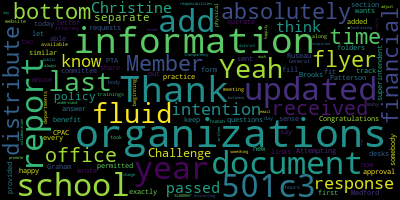
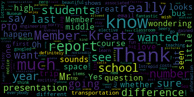
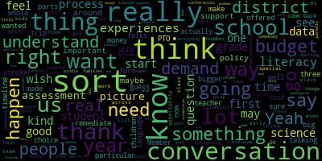
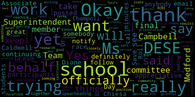
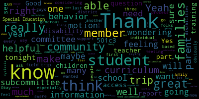

AI-generated transcript of Medford School Committee meeting February 24, 2020
English | español | português | 中国人 | kreyol ayisyen | tiếng việt | ខ្មែរ | русский | عربي | 한국인
Back to all transcripts
[Lungo-Koehn]: Good evening. We're live. Good evening. Regular meeting of the Medford School Committee will come to order, February 24th, 2020, Council Chambers, 7 p.m. Roll call. Member Van der Kloot.
[Van der Kloot]: Member Graham. Present. Member Kreatz. Here. Member McLaughlin.
[Unidentified]: Here.
[Van der Kloot]: Member Mustone is absent. Member Ruseau?
[Lungo-Koehn]: Present.
[Van der Kloot]: Member Van der Kloot? Present. Mayor Lungo-Koehn?
[Lungo-Koehn]: Present. All rise to salute our flag.
[Van der Kloot]: I pledge allegiance to the flag of the United States of America, and to the republic for which it stands, one nation under God, indivisible, with liberty and justice for all. Motion for suspension of the rules. Member Van der Kloot? I make a suspension in order to take up Number 61, 62, 73 and 76.
[Lungo-Koehn]: »» 61, Community Participation, Ms. Judy Lonergan, Jingle Bell Run. Did you want to make an announcement, Judy? Sure. Okay. You're the boss.
[SPEAKER_26]: We're here. We want to get insurance in real estate and Justin Lasko is representing members plus. We sponsor the Jingle Bell Rock Run that raises money for all the schools. So 100% of what the kids raise goes back to them. If they get runners, if they get sponsors, whatever means, chance, we sell chances, however means that they raise their money, it goes back to them 100%. And law and insurance and real estate and members plus, we pay for all the shirts, the running company, all the expenses so that 100% goes back to them. And if you run and you don't designate a school or a club or a team, that goes into a pool and the school that gets the highest number gets the highest percentage of that pool. So I know not everyone's here because of school vacation, so I'll give them, Justin's gonna hand the checks to the people, and I will announce who's getting them for tonight. All right, Andrew School, they made, what is that, $1,111.82, and Liz White is representing them. Thank you. Brooke's school made $1,385.87, and Jen Belitho, Belitho, is that how I say it, Jen? Belitho. All right, and she's also collecting for the girls' soccer, and they raised $360. Thank you. The Medford High School Medford Vocational PTO raised $1,595, and Susan Power, her son Liam Antoine, Jen Overberg, and her son Hunter are representing the Medford Vocational Medford High School. Thank you. I have to say, these mothers that just received the check have been with us since the very beginning, and we really appreciate the constant help and support that you have given us. I hope they never go to college, girls. Next in line is Katie Stefani, Karen Adams, sierra grant who's director of the medfed drama club medfed high school drama club and they are getting a check for nineteen hundred and seventy five dollars and seventy cents you're welcome find your next production alright the mcglenn middle school The assistant principal, Jody Lu, she's accepting a check for $2,875.68. Good for you. Jody is also one of the parents, I shouldn't say parents, one of the teachers who help us on the committee. So we're open for anybody who would like to help us next year, which expands the race, the program, and the sponsors. So we start in September, and it's a fun thing, and it's a good way to meet people that you don't know from other schools. All right, the next one is Columbus School, and they received, wait a minute, on expanding saint joseph school and they had this jacob e and grace in violent one again who are representing saint joseph and they are receiving a check they are receiving a check for two thousand six hundred and twenty three dollars and forty three cents the columbus school i think the second i don't have that St. Joseph's was fourth. Second place is Columbus, and they are receiving a check for $4,699.76. And Christine Magatti is representing Columbus. Thank you. You're welcome. Thanks. We had 668 runners that had registered for this race. And of course, it poured like insane. But we still had 400 and something people show up in the torrential rain. And first place had the most runners was Roberts with 128. Second was Columbus with 93. Third was St. Joseph's with 87. And the highest And I forgot the trophies. They're in the Roberts again. We give a trophy for the school that has the most runners and the school that raises the most money. And for the last, like, three years, I think the Roberts has won. And Ellen and Courtney Sharon, I hear, to represent the Roberts. And they get $8,151.
[Lazzaro]: Congratulations. Thank you.
[SPEAKER_26]: Thank you, everyone. Thank you. I think this is our seventh race, and I think we've raised almost $200,000 for the schools on this. So hopefully every year we'll get bigger and better. Thank you.
[Van der Kloot]: I think my button was pressed.
[Kreatz]: I'm sorry.
[Unidentified]: No problem.
[Van der Kloot]: Member van de Kloot. Judy, I just want to thank you before you leave the auditorium for your amazing work. You and your, I know you, that's my next sentence. You and your team just do a fabulous job. The amount of money that was raised and has been raised consecutively. Do you have a total for all the years? 200,000. Wow. Wow, that's just fabulous. Thank you so much. Member Graham.
[Graham]: Am I good? Am I on? I also wanted to say thank you. This year in particular, I know it was a real team effort. We called in reinforcements from all over the place to make this race happen. And there were lots of folks who jumped in, some of whom don't even have children in our schools, like Lauren Felch and a number of other folks who really, really stepped forward to make this happen and really bolster the team this year. So I just wanted to say a special thank you all the people who made this year's race in particular happen. Thank you.
[Lungo-Koehn]: Yep. If I may, from the chair, I also want to thank Judy and Justin and the team and the PTOs and everybody from the schools who participated. To have over 400 people running in that rain is a testament to how great of a race it is and the community spirit. The whole race, I just followed my son, who found the biggest puddles that he could find. It was probably the grossest race I've ever run, but it was still fabulous. So thank you for all you do for our community. Thank you. Superintendent.
[Edouard-Vincent]: I just want to say thank you to all the participants and thank you for continuing to have this great race on behalf of our schools. We're very appreciative.
[Lungo-Koehn]: Absolutely. While we're under suspension, we have Miss Julie Matariz who is here to announce Rare Disease Day, which is February 29th, 2020.
[uIlyuj9UctU_SPEAKER_10]: Hello. Hi, I'm Megan, and I'm Emily's sister. Thank you for letting me speak to you about Rare Disease Day. There are over 7,000 rare diseases identified. Emily has one. She was the only one born in 2003 to be born with one in Massachusetts. She has galactosemia. You can only get it if both your parents have dormant gene that matches up at conception. It's a one in four chance, which is just a large word that means her body cannot break down the sugar that is in milk. There is no cure, but we are lucky that all she has to do is follow a milk-free diet. If she does not follow the diet, the milk sugars will build up and she'll get cataracts, and it will cause her kidneys and liver to shut down. Every person with glaucoma is different. Some don't have any complications besides a diet. My sister has a lot of them. Hand tremors, speech apraxia, intellectual disabilities. She also has some medical issues. At the moment, there is no cure, but they are working on one. I just really thank you for wearing a ribbon and supporting her so she knows we all care.
[Lungo-Koehn]: Thank you.
[uIlyuj9UctU_SPEAKER_10]: In the envelopes, there is a blue ribbon that says Emily and Galactus see me on it.
[Lungo-Koehn]: It's a blue ribbon, yep, save this for February 29th, right?
[uIlyuj9UctU_SPEAKER_10]: 28th and 29th.
[Lungo-Koehn]: 28th and 29th, and we'll be lighting up City Hall blue in honor of this special day. Thank you, great job.
[McLaughlin]: reports of superintendent we have number three which under suspension which would you like to speak member mclaughlin thank you i just wanted to say thank you to the matter east family and especially to megan and emily for uh... being here tonight Megan, being a sibling of an individual with a disability can sometimes be challenging because sometimes you don't always get the attention that other people do. So I think it's really remarkable that you were able to come up tonight and speak on behalf of your sister. So thank you. And Emily, thank you so much for being here tonight. We've been able to enjoy you for so many years. Medford is so lucky to have you as part of their community. You're so involved with Spotlight Productions. I love the way you bring a smile to everybody's face in our community. And I want to thank you and your parents for being here tonight to help us all remember the importance of every individual in our community. So thank you so much.
[Lungo-Koehn]: Thank you again. Number three, recognition of Humanities Awards recipients. We'll invite Dr. Nicole Chiesa to come up to help us present.
[Chiesa]: Good evening. I'd like to ask my two teachers who were involved in our first set of awards, the Boston Globe Scholastic Writing Awards, to join me tonight. We had four teachers involved, but two of whom were able to attend tonight. So if Mr. Ambrose and Ms. Eckman would like to come up. I believe Ms. McGinnis and Ms. Sanford are not here, but please feel free to come up. The first set of awards is the Boston Globe Scholastic Writing Awards. These awards are an important opportunity for students to be recognized for their creative talents. There were over 2,000 Massachusetts students entering the Boston Globe Scholastic Writing Awards this year, and I'm very pleased to announce that Medford had six Scholastic Writing honorees, two gold keys, two silver keys, and two honorable mentions. All winners receive a certificate for each award. Gold and silver keys will also receive a pin, and they will be honored at Tufts University on March 14th. Also, gold key winners actually, their pieces are digitally sent to New York and they are entered into a national competition. So we're thrilled to have all of our winners and the two gold key winners will move on to the New York competition. We are very proud of all students that entered. It is not easy to enter your writing pieces and to share a piece of that with you. And I'd like to thank again, Ms. McGinnis, Ms. Zekman, Mr. Ambrose, and Ms. Sanford as well as all of the students who worked closely with them. Not every student could be here tonight, because as you can imagine, they're involved in multiple activities, but they're very excited to have their name read on the television as well. So with that, I think we begin with the gold key winners.
[Lungo-Koehn]: Read as best as I can.
[Chiesa]: Yes.
[Lungo-Koehn]: Some of the, yeah, Medford Public Schools is proud to recognize Sophia Hernandez for winning for winning the Gold Key Scholastic Writing Awards for 2020. All the school committee is listed and signed. Nertha Richards. Sophia, Sophia, congratulations. Nertha Richards is not here, we'll get that to her. Catherine Schmidt. Kenza Belula. would you like to announce the other awards?
[Chiesa]: Yes, I think you have two more honorable mentions there for Rachel Myers.
[Lungo-Koehn]: Oh, yes. Catherine Schmidt. Yep. Honorable mention, Scholarship Writing Award 2020, Rachel Myers. And another honorable mention for Catherine Smith. So double.
[Chiesa]: Thank you. Thank you so much. Thank you. Thank you. Okay. Moving right along. Um, the next award for humanities is the English speaking unions, Shakespearean monologue competition. Medford High School is very proud to have participated in this competition. There was a round that was held at the school level, and from here, the champion progresses to the state semifinals as Medford's representative. In the semifinals, the winner delivers a monologue and a sonnet, and entrants come from public and private schools throughout the state. Students are assessed on understanding, delivery, and audience engagement. And this year, we had our representative advance from the semifinals to the finals, which is an amazing accomplishment. And in the finals, this student became one of the top five high school Shakespearean performers in Massachusetts for this school year. Please join me in congratulating him.
[Lungo-Koehn]: Yes. Nicholas Urasco.
[Chiesa]: I also failed to mention that Mr. Bowen Flynn was the teacher who really supported him throughout this competition. So a thank you to Mr. Bowen Flynn who could not be with us tonight.
[Lungo-Koehn]: Mr. member Rousseau. Yes.
[Ruseau]: Um, I, I, when I read the list of the, uh, the titles of the pieces, I'm always like,
[Chiesa]: Yes.
[Ruseau]: Why don't I have a copy? Can we get a copy of the pieces, please? Yes.
[Chiesa]: What we first do is we make sure that the parents sign off and that the student signs off just to make sure that they want to share it with everyone. So we have a specific permission slip. So that's coming out absolutely. And then what we also like to do is publish it on our website as well once they do that. So yes.
[Unidentified]: Excellent.
[Chiesa]: Every year we'll get that. Thank you for reminding me of that. All right. Last but not least is Medford High School's Mock Trial Team. And tonight, we have the mock trial team advisor, Ms. McMahon, along with Attorney Rumley. And I'd like to invite them both to join me, if that's OK? Yes. A little background on Medford's Mock Trial. This is a competition with other Massachusetts high schools. This is open to students in grades 9 through 12. And students learn a variety of skills. They gain public speaking skills, they gain debating skills, analytical skills. At the end of each competition, and there were three that our students engaged in, they do receive a verdict from the judge. But that is not how they win the competition. They instead have to attain a series of points in a variety of categories, including points for their opening statement, points for their closing argument, points for direct examination, cross-examination, and even witness performance. This year, our mock trial team participated in three competitions, all of which were held at Waltham District Court. At the first trial, Medford prevailed 88 to 73. During the second trial, we narrowly lost to Winchester High School with a score of 81 to 77. But they did end their season with a third victory of 106 to 97 Excuse me, 106 to 97. Ms. McMahon is the hardworking advisor of this team. She supports the students tirelessly as they work on the variety of categories that I just listed. We also had Attorney Mark Rumbley, Attorney Elise Copley, and Attorney Robert Gilligan assist the students this year. They helped build their case, helped them interpret the case analysis, as well as the federal and state laws. and we are very grateful for their dedication and support. I know that they wanted to say something quickly, and then we have a list of students to recognize. Sounds great. One person wants to speak.
[SPEAKER_00]: Thank you. I just wanted to make this comment that for almost 40 years, I represented the city of Medford at all different levels, from the district court to the Supreme Judicial Court of Massachusetts. But this year, being part of the mock trial team and helping Dana, but I did very little help with her. She prepared this team so well. I've never been as proud as a group of youngsters in Medford, and they competed in this, and it wasn't just about the law. There's an element of theatrics, there's an element of public speaking, but most importantly, there's an element of not being afraid to stand up and be afraid to present and to succeed and to know that success is always on the other side of resistance. This team was especially competent. I'm so proud of them, and I just wanted to say those words. And I also have to point out that the administration and Dana McMahon, the faculty consultant on this, they trusted her and she drew the best out of each performance. I was honored to be part of it, and I think the city should know what great competition and great students we have.
[Unidentified]: Thank you.
[Lungo-Koehn]: Thank you. Ms. Emily Gatti.
[Chiesa]: She's busy doing something else probably very important. Yes. Isabella Batty.
[Lungo-Koehn]: Juliette Franks. Yousef Jahad. Lisa Lopez. Body Hung. Mayesha Vertilis. Christina Zhang. Abby Zawakil. Arthur Shillerman. And last but not least, Mishka Durali.
[Chiesa]: A special thank you to all of you for supporting these students in their endeavors. Thank you. Yes, thank you.
[Lungo-Koehn]: Report on project 351 by Mr. Nicholas Tucci and Michael Downs, our two principals from the middle schools.
[Tucci]: Thank you. Okay, good evening Medford School Committee. It's my pleasure to be here this evening to speak to you about the involvement of two of our middle school students in Medford who participated in last month's Project 351 launch day on Saturday, January 18th in Boston. 8th grade McGlynn Middle School student Sophia Hernandez and 8th grade Andrews Middle School student Jackson Olander were nominated by their teachers and selected by their principal to represent our community. These 8th grade students who represented Medford were chosen on the basis of Project 351's core values of their ambassadors. There are four core values. Kindness, the quality of being friendly, generous, considerate, and warm toward others. Compassion, the instinct to care deeply about others through the greater understanding of their life story and circumstances. Humility, the characteristic of being modest, especially when using one's power for the good of the community. And gratitude, the quality of being thankful, demonstrating appreciation and kindness with joy.
[ih84fneWXk0_SPEAKER_00]: According to Project 351's mission, they seek to develop the next generation of community first service leaders through customized service learning, hands-on community building, and values based on leadership training. Both Sophia and Jackson had a wonderful experience on the launch day at Faneuil Hall in Boston, where they got a chance to hear Governor Baker address the young leaders, perform acts of community service, and engage in interactive leadership activities, all designed to develop their leadership skills to one day uplift, unite, and transform the communities in which they live. We look forward to supporting their leadership projects this school year. At the same point in time, I'd like to turn it over to Sofia Hernandez and Jackson Orlando, who will share some of their experiences.
[Tucci]: And first, I'd like to introduce Sofia Hernandez, 8th grader at the McGlynn Middle School, who'd like to go through a little brief presentation with a few PowerPoint slides. Sofia.
[SPEAKER_12]: Okay. So, This is just gonna be a wrap up of like my day and everything. So I was dropped off at my regional place and we went to Faneuil Hall and then we were sent to our volunteer stations and we got back at the JFK Library. We had like a late reception and then we went home. So yeah. So this is a picture of everyone this year. It's all the 351 cities in the Commonwealth District. And this is just like, I was really, really nervous when I got at my bus stop. I didn't know what to do, and I soon made a lot of friends, and we went on our way. I got at Faneuil Hall and everyone was so kind. I remember there was lines of people with smiles and high fives. I was so nervous to meet everyone, but I soon settled in. This is a picture of Faneuil Hall. Inside Faneuil Hall, This is where the kickoff started. I met everyone, and we learned a special handshake, and we learned the core values, unite, act, lead, and I really took that with me throughout the day. We heard everyone speak from Celtics players to the governor, and we learned about six-word memoirs, which were honoring our service leaders, and then we went on the bus for our volunteer stations. Okay, this is just a picture of the governor speaking. Just people, that's the governor up there. And this is the choir. Okay, so there were multiple volunteer stations from the Greater Boston Food Bank to the Pine Street Inn in Boston. And I was located in Cradles to Crayons in Brighton. This is just a picture of all the locations. So at Cradles to Crayons, this is a nonprofit organization, and they make packs for underprivileged citizens, especially homeless children. And they include everything from clothes to toys to books. And it was so fulfilling just to know that I was helping someone. This is inside and everything. This is learning how to make the packs. You can see a little more inside. And this is just a quote they have that really resonated with me. And I was in the library. You can't really see that. And I was making book packs for kids. Again, this is just inside. And this is everyone who was stationed there. This is my service group. I think there's a lot of pictures, okay. Then we met back at the JFK Library, and we just talked about everything, and it was amazing. We learned about how many people we impacted. So in, how many people was it? It's crazy. So in total, we helped 46,000 people, and that was just like in an hour. In Cradle to Crayons, I can tell you all the numbers, it was 1,088. The homeless shelter, Pine Street Inn, it was 1,343. The food bank, 11,777. You get the point. It was just crazy how much people we helped. This is just at the JFK library, and we were just talking. This is really nice. We just talked with everyone. The theme was good trouble, and I couldn't believe how much good trouble we created that day. And then we just said goodbye and went home. Yeah. That's just a picture inside with my friend. That was some cupcakes. I like that picture, and that's the end. Thank you.
[Tucci]: And I'll just say to wrap up for Sophia, Sophia does plan to kick off her Cradles to Crayons initiative here in the city of Medford at the Wizards versus the middle school teachers basketball game on Thursday, March 12th. So I'd invite the community to participate and help out Sophia with her initiative in the city of Medford. Thank you. And now it's my pleasure to turn it over to Jackson Olander at the Andrews Middle School.
[Unidentified]: What was that?
[SPEAKER_06]: So, walking into this, I was completely terrified. The true beginning of this incredible experience was when I was called down to Mr. Downs' office. I didn't think I had done anything wrong. I remember walking down the 8A hallway wondering what on earth could have landed me there. I can count on one hand the amount of times I had been sent to the principal's office before this, so I had no idea what was going to happen. Thankfully, the walk was short, so I didn't have too much time to ponder my imminent demise. I sat down and Mr. Downs told me the basics behind the organization and asked if I was interested in serving. I said, okay. And so began my relationship to Project 351. My name is Jackson Olander and I am a Medford Ambassador to Project 351. On January 18th, I had the privilege to attend Launch Day 2020. I truly believe I walked out of those doors a different person than when I entered. Going in, I had no idea of what to expect, but I know for a fact that what occurred on that launch day exceeded any possible expectations I could have had. I think it's impossible to truly do this amazing project justice, but I'm going to try to do so. Upon entering this massive room, I was sat in a group of other eighth graders who looked just as alarmed as I did. We listened to short speeches from our peers and from the people we wish to emulate as we get older. And I was riveted. This beginning to our launch day was inspiring. It made me want to help the world. These inspiring people believed in us, believed in the change young people can make in the world. And that feeling was incredible. From there, we went to the truly amazing part of launch. We were divided into our service teams to go perform service in various locations. Each team was named after a well-known figure who dedicated themselves to service. I was assigned to the Pete Freight Service Team in honor of the man who created the Ice Bucket Challenge to raise money and awareness for ALS. Our group, along with several other service teams, went to UMass Boston to help prepare food for families and schools in need. Each group was placed making packaged soup mix to bag and send. The mix, when added to boiling water, would make a filling, nutritious meal. Our group of seven filled about six boxes of 72 packages each. After about three hours of this, we were sent to the JFK library to learn about our spring service project. The truest experience was the emotions brought from doing service. I will never be able to fully explain the feelings that came with this work. It was a fulfillment and a deep joy. In this environment, I felt for the first time in my life that I was doing something monumental that truly affected our community. In a few hours, our service team helped to feed thousands of people across Massachusetts. In all, the entire 2020 class of ambassadors fed and clothed almost 46,000 people. The experience was unreal. What stuck with me most was the connection I made with the other ambassadors. Everyone there had a different story, entirely different lives that likely would never have crossed otherwise. But for a few hours, we were connected and close. No matter what background a person came from, you knew that they were there because of a love of service and a driving passion to change the world. I believe that connection and that understanding drove us to be better and to bring out the best in each other. The joy that came with serving alongside these people has been unparalleled in everything I've done since. What comes next is our spring service led by ambassadors across Massachusetts. Every ambassador who registered will participate and drives across the state to benefit Cradles to Crayons. Project 351 will be heavily involved in these drives. Once a week, registered ambassadors will participate in conference calls to learn techniques and strategies for running their drives. They will also receive packages to assist their efforts with frequently asked questions, alumni advice, and other essential assets. Mr. Downs has already allowed me to begin planning a donation drive at the Andrews, which I have very high hopes for. However, I will also run drives at two other locations in Medford. The Dance Haven and Salem Street Studios are both communities that I am deeply connected to. Both have large clienteles of caring families and the three are relatively close together for easier collection. I hope to host events at these locations to raise money for the purchase of new clothes to donate in addition to the gently used clothes that will be donated. I plan to partner with Sophia Hernandez on this drive, and we are currently planning on where and when to host events and drives. Personally, I am very excited about these drives. I know Medford can do a lot to help people, and I am thrilled to be a part of that effort. If you are interested in donating, I will give you the information for these drives as plans are finalized. I will do my best to keep residents of Medford notified of any and all events for this service. Thank you for your time, and thank you for taking such an interest in this project.
[Lungo-Koehn]: Thank you very much. Thank you. Suspension for... Oh, yes.
[Van der Kloot]: I just wanted to thank the two student ambassadors for your presentation. It was great. You joined a long list of watched with pride when our students have been selected. It's a big deal to be selected from your school. And we are grateful for how well you represented us already on the special day and your work in the future. We expect to see a lot of you, and let us know if we can help. Thank you very much.
[Lungo-Koehn]: Thank you, and thank you for being here. While we're under suspension, we're gonna take negotiations and legal matters. Is there a motion? It's executive session. Yep. Motion by member Ruseau that we go into executive session. Seconded by member Graham. All those in favor? All those opposed?
[Unidentified]: Motion passes. McLaughlin.
[Lungo-Koehn]: All those in favor? All those opposed? We have approval of the minutes of February 3rd, 2020. Motion to approve by Member McLaughlin, seconded by Member Ruseau. Member Ruseau.
[Ruseau]: Yes, on page two, it's not actually anything that needs to be changed, but there is the motion to, we did vote to create an advisory committee. I'm happy to work with the superintendent to do that, unless the superintendent is, I don't, we don't really have a lot of, I don't have a lot of experience with us creating these things, so I don't know who was really supposed to take the lead in actually finding people.
[Lungo-Koehn]: Is this for the task force, food?
[Ruseau]: Yeah, exactly, yes.
[Lungo-Koehn]: My office is gonna be putting together a committee, so we have the task force up with the Board of Health, and we're gonna be putting together a committee, and we'll make sure there's a member of the school committee on that committee, if that's amenable.
[Ruseau]: Yeah, I mean, this does require that there's at least one teacher, administrative and nursing representative, adjustment Councilor. I mean, this could certainly be part of that, but I just feel like the recommendations within the school system will be so, I don't want to say, it'll be more focused. More focused on the schools?
[Lungo-Koehn]: Yeah, we could do one through superintendent and one through my office for the city side.
[Ruseau]: I don't really have a strong preference, but I do think that if we're pulling in these people through the schools, then they're probably going to want to meet during school time at the schools, which wouldn't work well.
[Edouard-Vincent]: Yes, we can definitely do that.
[Ruseau]: OK.
[Lungo-Koehn]: We can even advertise together and then separate the applications so we can get a good pool of people interested if we want to do it that way. Thank you. I'm happy to advertise through a press release. OK, roll call vote on the minutes. I actually didn't have a question. Oh, yeah. Member McLaughlin.
[McLaughlin]: Yes, thank you. I also had a question on the committee of the whole meeting that we had talked about scheduling for the students. I'm wondering if that's been scheduled for the student issue that was before us last time. Minimum wage.
[Lungo-Koehn]: Yes, that was scheduled for March 4th at 4 p.m. We're gonna do a walkthrough of the high school, then we're gonna sit down and meet on the minimum wage. 4 o'clock on March 4th.
[Edouard-Vincent]: And did anybody notify the... No, that hasn't been... It hasn't been officially posted yet. I just did the... To all members of Save the Day. Okay. Okay. Just as a follow up, we said somebody would email the students. You will. Okay. Okay. Thank you. Roll call for the minutes.
[Lungo-Koehn]: Member Van der Kloot?
[Van der Kloot]: Yes. Member Graham? Member Kreatz? Yes. Member McLaughlin? Yes. Member Mustone is absent. Member Ruseau? Yes. Member Van der Kloot? Yes. Mayor Lungo-Koehn? Yes.
[Lungo-Koehn]: All those in favor? None in opposition? Minutes pass. Approval of bills, transfer of funds, and approval of payroll. Motion to approve by Member Ruseau, seconded by Member Kreatz. Roll call. Member Graham?
[Van der Kloot]: Member Kreatz? Yes. Member McLaughlin? Yes. Member Mustone? Is absent. Member Ruseau? Yes. Member Van der Kloot? Yes. Mayor Lungo-Koehn?
[Lungo-Koehn]: Yes. Six in the affirmative, one absent. Paper passes. Report of secretary. There is none. Motion to receive and place on file. All those in favor? All those opposed? Reports of committees. Committee of the whole. Goals for the budget process 2, 3, 20. Would you like to give the report?
[Van der Kloot]: No, I do the curriculum one. OK.
[Lungo-Koehn]: On February 3, 2020, at 5.42 PM, we all met as a committee along with Superintendent Diane Caldwell, John McLaughlin, Patrick Gordon, Lisa Evangelista, and Emily Lazzaro. We discuss the budget process, we ask questions as it relates to the budget, just to get ready for our budget season, which started tonight at 5.30. Before every school committee meeting, we will meet in Committee of the Whole, it will be televised, and we will meet at 5.30 to go through every department so that we can hopefully have the budget hearing presentation on June 15, 2020. Today we reviewed guidance, English language arts, social studies, mathematics, science, world languages. Our next meeting is March 9, 2020, and we will go through the elementary schools budget of $9,751,017. Member Ruseau.
[Ruseau]: Yes, within the minutes of that meeting, are we talking about the, I'm sorry, the Committee of the Whole we had on February 3rd? Yes. Yes, thank you. On page six, there's a mention that we have, there's pothole funding, I just hate that it's called pothole funding, because it's not for potholes, coming in for charter reimbursements, and I was just curious if the city had received that funding already or not. It doesn't really come to us in the schools, It's on the third paragraph of page six.
[Lungo-Koehn]: I'm not sure personally if we've received it yet, but I will look into that.
[Ruseau]: Thank you. That's all. Motion to approve.
[Lungo-Koehn]: A motion to approve by Member Ruseau, seconded by Member Kreatz. All those in favor? Aye. Paper passes. I'm sorry. That's OK.
[SPEAKER_21]: Just one of those times.
[Lungo-Koehn]: It's OK. Committee of the whole meeting, goals for the, oh, we did that one. Curriculum subcommittee, enhanced core reading instruction, ECRI, and planning for future meetings, 2-5-20.
[Van der Kloot]: Do we want to suspend, before we go on to this order of business, do we want to suspend the rules and continue our meeting? What would you like to suspend the rules for? Right, because this is going to take some time to read it all. Sure. Okay, so I'd like to make a motion to suspend the rules so we can pick up the two departments that were not heard yet from our pre budget meeting. Yes, motion.
[Lungo-Koehn]: to suspend the rules by member Van der Kloot, seconded by member McLaughlin. All those in favor? Aye. All those opposed? When we were in our committee, the whole meeting this evening, we've got through almost all the budget outlines. We have two remaining that we need to finish. So we will call up our director of science.
[Cieri]: I'm not sure if it's, okay, it is on. Good evening. And I just wanted to take a moment to say hello. It's a new school committee line up for me and I see some new members and some people that I've met before. Congratulations and it's a pretty exciting time because it's my first time in front of you all. The science budget for the upcoming school year includes some payments for the FOSS program. which is $69,750 of the total $180,000 that we're proposing. That is the second payment and it's 25% of the program and it will go on for the next school year as well. It has really, I think, been a Big change for the elementary schools, the K-5 program, and also a welcome change by many of the teachers. We see them really working with the materials that are part of the program, and the students are really engaged essentially 100% of the time in any class that I walk in. One in particular, earlier in the year, I went into Roberts Elementary classroom, and this particular classroom has newcomers come in. And there was a student there that had only been in class for three days or two days. And the student had a notebook, was prepared with all the materials, was illustrating because, again, it's a newcomer class in the fourth grade, and it was an incredible sort of like experience for the child. And it has what we call a low bar, but a really high ceiling for kids to be able to explore science. So it's a great program. And I was so excited to see that particular student really be able to get into the the curriculum. And that's replicated class after class after class, no matter where you go, it's always the same. So we're going to continue supporting teachers with that program. They will need to continue to purchase some smaller items that are listed there. We have to replace vinegar and plaster of Paris and paper products, sand and dirt, and also make sure that the living samples that will be needed for next year are covered. So that's 12,400, which gives us about $100 per grade level per school in addition, and then the rest would be for classroom, for the living materials. That cost could come down, it just depends on what the cost of living materials are at the given time that we have to purchase them. At the middle level, we're really looking currently at a new program. We anticipate being able to propose some program. We're looking at two specifically right now. We finished up a pilot of a program called iQuest, which is part of Activate Learning. It's similar to the FOSS program, but it is It's a more robust and deep project that's related to the new frameworks. And then the next one began, it probably is beginning this week or started the week before February break, just in terms of training time and the materials arrival at middle schools. and that one is called STEMscopes. All the teachers have the material, not all of the teachers, I shouldn't say, pilot teachers have those materials and they're piloting those two programs at the moment. So we'll be able to give you some more information about which one might be a better fit for Medford at that time. I'm really just giving you an estimated cost of $45,000 right now. As a placeholder, I'm not sure what the cost will be annually for that program at the moment. It depends on which one we go with. and also at the high school level, we are having a curricular change which will help us get more electives for students in grades 11 and 12. In order to do that and keep all of the Desi requirements and the MCAS in mind, we're stepping away from introductory physics, moving in biology as a ninth grade course, moving in chemistry as a tenth grade course, and then they could take electives, eleventh and twelfth grade. In order to do that, it would make a lot of sense to purchase new biology texts to cover that, and there's a placeholder for $45,000 in the textbook line for that. It could come down, again, we're gonna look at different texts, but we're really looking at texts in that case with an online component. not a program. The curriculum itself is really robust. The teachers work extremely hard in creating units of instruction that are coherent and connected to the frameworks. This is really a resource to use so that students can find some of the biology content in that area. There's also $7,500 allocated to make sure that classroom supplies and consumables are present for the department, which is about where we are annually for the high school. That includes all of the chemicals that we might need in a particular year and also their classroom supplies that they would need for the high school, 9 through 12. We also ask for $500 for the office, and that includes office supplies, folders, binders, things of that nature for the office. All in all, I think we're making some forward motion in two key areas, at the middle school and at the high school, which were really needed, and I think it's gonna open up a lot of things in the future for the kids.
[Lungo-Koehn]: Thank you. Member McLaughlin.
[McLaughlin]: Thank you very much for this report. Very helpful. Nice to meet you. I am wondering about... I loved how you described the low bar but high ceiling for the science curriculum and I know that science is really often a core topic that is available to all of our learners, especially with the project-based learning, hands-on, experiential. I'm wondering if there are supplemental aspects to the curriculum for both our EL and our children with special education needs, so our access programs, our language-based classrooms.
[Cieri]: So, some of the materials, when FOSS was designed by the University of California, Berkeley, they took into consideration a lot of the pieces that are very tactile. So, all of the materials that are there, they really took into consideration students with disabilities and that had maybe, you know, challenges to picking up certain types of tools and also visually impaired students. So some of the devices actually have like you can feel where the quantities are rather than just see it visually and students would be able to access the materials. So we've deployed enough materials to cover every grade level and every classroom at every school for three years, and that includes both the permanent and the consumable materials. It was an enormous purchase, and we can also add in things to that. It also provides online components that are not subscription-based. It's all included in the price that we paid, and we also got the living animals. Living animals are a little bit of a challenge in some classrooms versus others, But there will be enough around that we can definitely make some attempts at seeing what would be possible in different environments. The FOSS group is really helpful in giving us some guidance on that as well. So as we train teachers and talk about those different areas, we'll be able to increase our reach into those classrooms.
[McLaughlin]: Thank you. Thanks for considering that. I appreciate it. And for the home-based, I mean, for the technology access, is there home access also? Yes.
[Cieri]: So there's home access by student and there's, we haven't like activated it necessarily, but it's completely accessible by every student in any environment, whether they're at school at home. Yeah.
[McLaughlin]: So families watching should know that they have online access to the science curriculum. That's great. Thank you so much. You're welcome. Very helpful.
[Kreatz]: Thank you. Member Kreatz. Thank you very much for the report, Mrs. Seery. I just had a question about one of the wish list items. Yes. And it was, there was zero costs associated with it. The high school engineering course.
[Cieri]: Yes.
[Kreatz]: I was wondering if you could go over that a little bit.
[Cieri]: Sure. So currently we have a robotics and engineering program at the high school. at the vocational side of the house. They're building a new space and it will allow us to sort of allow electives to be part of the mix for students at the high school but also give credit to students that are in the vocational program to be able to use that. So it's a no-cost item. It's basically we give permission to say this is possible and we start to find ways of enrolling students into the program. Right now, we think we have enough staffing to be able to support a section of this kind of thing. If the need rises and we need more staffing, we'll start considering it as we roll out the new program. the new curriculum. So we think we're good. We don't need any extra. It's a free item I thought you should know and it's just a quick change that can be made for kids.
[Kreatz]: I think it sounds fantastic. I've seen the new space and it's beautiful. It's really big. There's so much to learn and I'm sure Mr. Chrissy would love to have the students in his classroom and he loves teaching everybody. So is this definitely going to happen as an elective?
[Cieri]: Yeah, so Mr. Chrissy's been in the conversation as has Mr. Fallon, so this is an unknown territory at this point. I'm sort of formalizing it for you that you know sort of the direction we're heading with the engineering and what we think would be really helpful as an added piece.
[Van der Kloot]: Thank you very much. Member Van der Kloot. Mr. Seary, I just want to go back to the issue of the ninth grade biology. So of course, as you know, for many, many years, biology was the ninth grade subject. And in fact, the physics was changed to the ninth grade subject because of the fact that the students needed to take a ninth grade science MCAS and it was thought that the physics was more approachable maybe or whatever. Anyway, I'm glad to see biology coming back. I think it fits well in the ninth grade. I think all students should be able to take it then. But I am wondering about the change of thinking about will the students then take the biology MCAS in ninth grade?
[Cieri]: Yes. So all students would be taking the ninth grade biology MCAS.
[Van der Kloot]: Okay, and so will our teachers who were teaching biology in an upper grade now come teach it to ninth graders?
[Unidentified]: Yes.
[Van der Kloot]: And will the physics Will there still be that introductory physics, or will physics be left?
[Cieri]: No, the physics is going to be a 11th, 12th grade elective. So we're not jettisoning the course itself, or the materials, or the investment. But we are going to ramp it up so that the mathematics of that course is appropriate to the students at the level. We've seen a lot of different solutions to this. We think this is the one that will work for our students. Earth science was the first course and we had earth science and then honors biology. We replaced earth science with introductory physics and left biology as an honors course. I thought leaving and the faculty sort of agrees at this point with the changes in the framework. that biology is doable completely by ninth graders and that we can move forward. In the future, as we look at chemistry, this is an area where we'll have to work really diligently. We've embraced the chemistry course as a faculty to look at it and try to make it approachable for a 10th grader. That's really the, that will be our big challenge.
[Van der Kloot]: Will we have any earth science course at all offered?
[Cieri]: Any earth science? Yeah. It can be open to that. So once the elective world is open for us to be able to put in other courses, we can add in things that we think we can support, such as an earth science course. We have environmental science. We have anatomy and physiology. We're sort of double use of engineering. So it's going to open up all those courses and allow more students to access elective courses.
[Van der Kloot]: And this change will happen in September?
[Cieri]: Correct.
[Van der Kloot]: September 2020. That's with relatively quick, but I imagine that your staff is all on board for this? Yes.
[Cieri]: They're ready to go.
[Van der Kloot]: Thank you very much.
[Cieri]: Thank you.
[Van der Kloot]: Member Graham.
[Graham]: Hi. Hi. I just wanted to say thank you for the work that you've been doing to pilot FOSS in particular. I had the opportunity to sit in on some of the early conversations when teachers were looking at various curricula and I just really commend the process and the engagement from teachers across the entire district. So I think that that has served us well, because what I hear come back from my kids is real excitement about science, and I sort of wish I got to learn science that way, because as it stands, I'm not allowed to teach science in my home, because I'm unqualified, so I might drop in for a science class or two. And then one question that I had on the budget was, I was surprised to see that the consumables cost was so low, frankly. To be bringing in living organisms and all kinds of other things, that's not a lot of money across such a big swath of classrooms.
[Cieri]: Right. So the costs are based on estimates that were provided by the vendor. And it's certainly within the ballpark of what we think it will cost. There are some cost savings that can be done if we deliver in bulk and then, you know, I put all the animals in my car and take them to the schools. It's actually kind of a fun thing to do. It sounds a little weird, but it's really fun to deliver live crayfish to schools and classrooms. So I'm looking forward to that part. And it does provide a little cost savings. So the arrival of the organisms is something that we will anticipate. It's going to be fun. It's an exciting moment for the kids. And if we coordinate it right, there will be some cost savings if we get them delivered in bulk. So, you know, it sounds like a lot or a little, but the kits also included like three years worth of consumables. So at some point we're going to have to like re-up and I'll come back. But right now we're good.
[Graham]: OK. And then the other just point of context for the people in the audience. We sort of made reference to a wish list. All of the departments have been asked to identify three to five initiatives. that if funded would positively impact student achievement. So that's a mouthful. So it's sort of been abbreviated to wish list. And so all of the departments are providing the school committee really for the first time an articulation of what those things are. So thank you for doing that. And it's super nice to be able to grant $0 wishes. So thank you for that too. That was the best wish so far.
[SPEAKER_21]: But I like them all, actually. I like all of your wishes. But that one's an easy one. Thank you. Thank you.
[Cieri]: Thank you.
[SPEAKER_21]: Appreciate it.
[Lungo-Koehn]: We have World Language Department presented by Dr. Bernadette Riccadeli. And that is page 18 on your budget. 18 of 28.
[Ricciardelli]: Yeah, so I'm going to ask the lead teacher for the department, Vilma B. Bowe, to be up here with me. I will deliver the report, but certainly she's available for questions as I am. So I'm here to present... on the World Language Department, and I have been covering this department now for a year and a half. I was asked to cover in this role after the retirement of Mrs. DiCarlo, who was the foreign language director at that time. As you know, we have changed the name of the department to World Language. We think it reflects and embraces all that we are here in Medford. So I'll start with staffing. So we have a total of 19 educators in the department. We have three elementary paraprofessionals. We have five middle school teachers. One of those teachers travels back and forth to each of the two middle schools. So there are two and a half at each middle school. We have 11 high school teachers. Two of those teachers have abbreviated schedules. There are two lead teachers. So Mrs. Bebo is one, so she teaches an abbreviated schedule. She does a lot of, she helps me with the department. And then we also have the lead teacher for the CCSR, even though CCSR is not my department. The teacher that does CCSR is a Spanish teacher in the department and associated with the CCSR. We also have one vocational section that is taught, one vocational online Spanish section taught by a math teacher. So I just wanted to be upfront with that. That teacher did have room in her schedule. That teacher is a native Spanish speaker. So she very graciously offered to teach one of our online sections. So I'm going to start with our elementary level, because we do have some significant news to report. So as you know, CASET, which is an organization that supports Italian language in Massachusetts, they're actually based in Wakefield, has received notice from the Italian government. So it's the Ministry of Foreign Affairs through the Italian Consulate, actually the Italian Consulate through the Italian Ministry of Foreign Affairs, that Cassett has lost its funding. And the reason why this is significant is because for the past 20 plus years, Cassett has supported our elementary Italian program by contributing $50,000. That money has been taken away. So I think it was late, mid to late January when we were informed that that happened. So that is effective immediately. Not only does that affect the elementary Italian program, But also, Casset was funding some of the AP exams that I believe Maureen Lavin brought up earlier, the decrease in the number of AP exams, because Casset was funding. We were actually encouraging junior students in Italian to take those AP exams. And they've also, in the past, funded a number of contests that have already begun, and with the abrupt ending of the funding, we are trying to reach out to other sources to fund those contests that were promised to the students. So we are we are disappointed again for 20 plus years we have taught students in Medford Italian in grades 2 through 5 and There are three I'll call them teachers, but they are paraprofessionals They've been with us and actually Vilma started off in Medford as one of the Cassett teachers She's now one of obviously our full-time teachers, but that's where she got her start. I think it is It's a wonderful opportunity for our students, it's just unfortunate that we've lost the funding for that. And I'll be happy to answer questions at the end of the report regarding regarding that issue. At the middle school level, one of the improvements that we made this year is that in grade six, and along with the cooperation of the middle school principals, each student in grade six has their language three times a week. Prior to this year, it was twice a week. So we do see an improvement in that area. In grade seven and eight, they also have their language three times a week. So all middle school students who take a language meet three times a week. French is not offered in the middle school. That was taken away about, I'm guessing, 14 or 15 years ago with the retirement of at least one teacher who taught French in that level. So there are only two options in middle school. At the high school level, students may opt to study French, Italian, or Spanish. We do see that French is at a disadvantage because they're not coming in with the French background. So just jumping forward to the wish list, I would eventually like to see French be offered as an option on the middle school level to put it on equal ground with the other two languages. Going back to the high school level, so it is a requirement on the high school side of the house for students to take two years of a language. On the vocational side, it is highly encouraged, and if a student wants to pursue a college route, it is particularly encouraged. It's encouraged for everybody, but colleges do look for that. Because the schedule is prohibitive, to offering language to grades 10, 11, and 12 students. We do offer an online language program for vocational students. We have had, I think, some real successes with that. The teacher, we have two teachers. One is the math teacher I spoke about, and then we have a full-time language teacher who really works wonders with those students. So it's a hybrid. She does meet with them in addition to doing the online work. Vilma has been really busy with our Seal of Biliteracy program, and in fact, under Rita DeCarlo, when she was doing her practicum, she is the one who approached Rita to bring it to Medford, so we did it. That was the initial year. She worked on it last year, and now Vilma is doing a lot of work on the Seal of Biliteracy this year. And actually, I probably should turn it over, because you know so much more about the Seal of Biliteracy and all of the steps involved. So did you want to say a couple of words about
[Vilma Bibeau]: What you're doing. Good evening. The Syllable Lyrics is a wonderful program. This is the third year that we implemented in Medford. And the beauty of this program is that it's open to any student, all seniors, to see if they're proficient in another language other than English. other than English, and if they do reach that proficiency by taking this test that we offer, the student gets in his or her diploma a transcript, the biliteracy, that he or she is biliterate in another language other than English. than English. This has been highly successful. Last year we had several students that reached the state sealed biliteracy. And this year I have 54 students taking the sealed biliteracy starting this Wednesday. And I have nine students that take in two languages, either Italian or Chinese or French or Portuguese or Portuguese and Spanish and so on and so forth. So it's a wonderful program.
[Ricciardelli]: Thank you. Vilma has also been working on bringing national honor societies in Spanish, French, and Italian to the school this year. So this is our first year bringing in those national honor societies. And she also has been instrumental in organizing the World Language Festival, which I believe the school committee has been invited to, as has the whole school community, which will take place on March 6th of this year. So we're very excited about that. Jumping forward here to the wish list items, I mentioned reintroducing French on the middle school level. One of the difficulties would be licensure for a teacher. We can't just bring a teacher who teaches Spanish over to teach French because there is different licensure. We do have one middle school teacher who would be able to teach French, but it certainly wouldn't be enough to address the needs of both schools. So the estimated cost would be a salary level plus materials, an estimate of $75,000. A second idea that we have that would be wonderful, which is much less of a cost, about $6,000, but it would be difficult to find a location. We would be looking for a world language lab so that students would be able to practice their communication in an environment that was set up and conducive to doing so. It is possible for us to go to a computer lab, but it's not set up with the dividers. To do it right, you need it set up in a location, and then teachers within the department would be able to rotate in. So the initial thought is to start one on the high school level, and then eventually bring it down to the middle school level. And then the third idea for a wish list would be, and this really is more long range, we're thinking, The possibility of introducing new languages. A survey was done a couple of years ago and in that survey there appeared to be some support for Portuguese and for Arabic. So we certainly do want to investigate that but that would not be for next year but that would be something that we would begin investigating or doing additional surveys on next year. So I think at this point that's an overview. I think we would be happy to take any questions that you have.
[Lungo-Koehn]: Thank you very much. Doesn't seem to be any questions, but because you did such a good detailed report for us. You do? Okay. Change your mind.
[Ricciardelli]: You're welcome.
[Lungo-Koehn]: Member van der Kloot.
[Van der Kloot]: So with the change in the Italian consulate covering the money for the paraprofessionals, I think that we need to have a discussion about how we will use that time, whether we'll continue as we are or whether there's something else that's needed in the curriculum. I don't know how much time people have yet from the administrative have been able to consider the options and what might be needed. I would make a motion to send this topic to the curriculum subcommittee meeting once people are ready to address it.
[Lungo-Koehn]: For approval by a member of Vindiclude, seconded by a member of Rousseau. All those in favor? Aye. All those opposed? Motion passes. Thank you. You're welcome.
[Graham]: Yep, member Graham. Sorry. At the middle school level, do you have any data that tells us what demand would look like if there was another language offering? So I don't know how the selection process happens today. If one language is more popular than the other, if you introduce French, how would that change the dynamics of students and sort of what their preferences are. And I don't know if you have that information or there's a way you can sort of start to collect it to understand demand.
[Ricciardelli]: So I think we, so right now we have one, we have one staff member that, that one staff member could possibly travel over to the other middle school. You know, and if we did that, we would have to restrict, restrict it to grade six. Um, I think that's how we would have to start. In terms of demand, what we do, and this is going to happen very soon in early March, is we send a form out to grade five students and their parents, and we tell them what the options are. Right now the two options are your Spanish and your Italian, and then they respond, and then we put them in those classes. So I don't know. I would have to do, I'd have to get that information to figure out how many sections. Is there a demand? We're looking at the feedback that some of the high school teachers have given us that they wish that they had had an opportunity to start French earlier. So we kind of worked backwards with that. And we're also seeing the French program, it is not as strong as the Spanish and the Italian programs. And we are kind of deducing that it is because of the fact that it's not offered in middle school.
[Graham]: »» So is there an opportunity to do some data collection since this form is going to go out and families are going to be responding in real time to understand, would there be a preference there? if it was offered. I mean, obviously we'd have to say it's not offered currently, but we're trying to understand what the demand would be if there was three choices.
[Ricciardelli]: Yes, so on the form that goes out, we usually, where there were two choices, we ask them to rate one and two. There's no guarantee. We really have tried and the principals have tried to honor what the request is. But there's always that caveat that if we can't, we'll put you in the other language. So certainly we could put something out. If French was an option, what's your first choice, what's your second choice, what's your third choice? And if the demand wasn't there, then we would just go to the second choice. We could do that.
[Graham]: And I guess the other question that I would have is, do you have data that you could share with us about historical demand? So how often? does somebody get their first choice? How often does somebody not get their first choice and gets placed? Because I feel like once you start on a trajectory with language, you're in a shoot and you're continuing down that path. It's a little bit harder to change course. So I'm just curious if we have the right number of the right things based on what we see the demand is.
[Ricciardelli]: So you're saying last year, so based on last year's requests, how many of those students, I can get that because we have the request, it would just be matching it up with where the kids are. There were a number of students that based on their MCAS scores, based on other assessments that were targeted for intervention that Nicole Chiesa talked about. So for additional remediation in English. So with the exception of those students, I would say those who requested a language, almost all of them did get what they wanted. Okay, good. But I can confirm that. Yeah, that would be great. Thank you.
[Ruseau]: Member Ruseau. The sudden loss of funding from Casset, do we get an annual check or are we like literally like suddenly we have a hole?
[Ricciardelli]: I believe, and perhaps Christine could confirm this because the money doesn't come to me, I believe it's in two installments of $25,000. I believe we received the $25,000. Did we?
[Patterson]: It was previously one installment at the end of a fiscal year, but we had received $25,000 of it this year, so that will no longer be coming. It is identified as a revenue source to supplement, so that will not be on our revenue options for the upcoming year. Thank you.
[Lungo-Koehn]: Okay. Thank you very much, and we'll discuss more in the curriculum subcommittee. I'm not sure where we want to go next. We have some parents, we have some administrators here, city hall employees. I'll just go and order a recommendation to approve donation for three speech and language pathologists to attend the National Speech Association Conference. Ms. Joan Bowen. Hi.
[Bowen]: Good evening. Ms. Elizabeth Gomez would like to donate funds to support the registration costs for up to three of Medford's speech and language therapists to attend a one-day National Stuttering Association event. This event will take place on March 7, 2020 at a cost of $59 per person. resulting in a potential donation of $177. Ms. Gomez is the parent of a child who stutters and is the co-leader of the National Stuttering Association's Boston Family Chapter. She is also a Medford High School Spanish teacher. Attendance at the National Stuttering Association event will provide participating speech and language therapists with an interactive presentation about therapy for school-age children who stutter, including treatment of the motor, social, cognitive, and emotional aspects of the disorder. This generous donation is truly appreciated, and we know that educator participation and professional development can result in an increase in the collective knowledge of the entire team which results in better outcomes for our students. So I'm here tonight to request that Medford Public Schools accepts this donation. Thank you. Member McLaughlin.
[McLaughlin]: I make a motion to accept the donation. But first, I also want to thank Ms. Gomez for the very generous thought and offer, both as a parent and as a teacher in our district, that she's doing this. It's really remarkable. It is. So that's great news. So how many teachers are going? So there's three speech therapists that will be attending, yes. Okay, and so are they already identified? Did they self-identify?
[Bowen]: Yes, they have. Yep.
[McLaughlin]: Great. Yep. Congratulations, that's great. Thank you. So I make a motion to approve.
[Van der Kloot]: Motion to approve. Member Van der Kloot. I second the motion and thank Ms. Gozmez as well. This is not the first year she's done it and we appreciate her generosity and support. Absolutely. Great.
[Lungo-Koehn]: Motion for approval by Member McLaughlin, seconded by Member Van der Kloot. All those in favor? Aye. All those opposed? Paper passes. Thank you. Recommendation to approve middle school field trips to New York.
[Van der Kloot]: Oh, we should. Yes, we should. Thank you. Roll call vote. Roll call to accept the donation. Member Graham. Yes. Member Kreatz. Yes. Member McLaughlin. Yes. Member Mustone is absent. Member Ruseau. Yes. Member Van der Kloot. Yes. Mayor Lungo-Koehn.
[Lungo-Koehn]: Yes. All those in favor. Six in favor, one absent. Motion passes. Recommendation to approve middle school field trips to New York, Principal Nick Tucci and Principal Michael Downs.
[Tucci]: Good evening once again. On behalf of the McGlynn Middle School, I'd like to present our proposal and answer any questions you may have to take the 8th grade students of the McGlynn Middle School to a trip to New York City. The eighth grade trip to New York City has been an annual tradition since our school opened in 2001. The Andrews and McGlynn Middle School held a parent meeting in the fall where the New York City trip was introduced and questions were answered. This year, 56 students have signed up for the trip for the McGlynn Middle School. The cost of the trip is $650 per student with scholarships offered for financially challenged families. Property damage insurance is provided by the company. There will be a school nurse traveling with the group on this trip. The trip is scheduled for the weekend of June 5th through the 7th with buses departing Friday, June 5th at 6 a.m. The itinerary for the trip includes a visit to the Intrepid Sea and Airspace Museum, Times Square, Top of the Rock, the Museum of Natural History, the 9-11 Memorial, a production of Stomp, and a trip to the Metropolitan Museum of Art. Students remaining in school that Friday and not participating in the New York City Field Trip will participate in enrichment activities that support curriculum and social developments. We will also be looking to offer another trip, like we did last year, for 8th graders who stay back to attend a field trip to Medford High School to swim in the pool. I'd like to acknowledge the work of the McGlynn Middle School teacher and New York City Trip Advisor, Sabrina Yeager, who was unable to make it for tonight for her hard work and attention to detail on this field trip. Her tireless work ethic this year will pay off in dividends to offer a lifetime experience for our students who enjoy this trip to the Big Apple with their teachers and their peers. At this time, I'll turn it over to Andrews Middle School Principal, Michael Downs, who will speak further on the trip on behalf of the Andrews Middle School. Thank you.
[ih84fneWXk0_SPEAKER_00]: Thank you, Nick. Hello once again. So this year, the Andrews has 120 students going. And before I get into more specifics about the trip, I want to give a very public and big thank you to our PTO. and some anonymous families who have worked tirelessly, the PTO in particular, to provide scholarships for some of our students in need and to those families out there that did donate without anybody wanting to know who they were, who are also helping out some of our students in need. And without them, there are some students that wouldn't be able to go. So for that, I'm very grateful and I'm very humbled by the support that not only the PTO gives us, but some of the families in the community. to the students of the Andrews Middle School. Similar to the McGlynn Middle School, this has been a huge part of being an eighth grader since 2001. It's a very exciting time. Our students look forward to it. Our teachers look forward to it. I have to give another big thank you out to Miss Wendy Fuller. She is my New York City Trip Advisor this year, and she has worked very hard so far already. I also have to thank publicly Miss Kathy Johnson, who has helped out a lot as well. Our trip is very similar with our itinerary, but this year there's a couple changes. We are going to go to the Top of the Rock Observatory this year, which is new for our trip. We are also going to the Intrepid Air and Space Museum, the 9-11 Memorial, and of course we are also going to see STOMP. So the two schools, although we are both going to New York City, we will see each other here and there, but we also have our own itinerary But both the experiences are great for all the students involved. If you have any questions, please let me know. Thank you so much.
[Lungo-Koehn]: Thank you. Member McLaughlin.
[McLaughlin]: Thank you. This is always a fun trip, I know, for the students having had two 8th graders who have gone on the trip. I have a couple of questions. if you can help me with. So I also want to thank the teachers and you guys for going on the trip. I know the coordination that's involved with this. And I actually went on the trip myself a few years ago and trying to wrangle all those students and keep track of everybody and make sure everyone's fed and you get some sleep and all that stuff. We know how hard it is. So thank you for doing this. So it looks like for the Andrews, there's 120 students that are going. And for the McGlynn, there are 56. Of how many in your 8th grade class? So maybe Mr. Downs, if you want to answer first, how many in the... As of right now, we have 162 8th grade.
[ih84fneWXk0_SPEAKER_00]: 8th graders, yes. Okay. So of 162, 120 are going? That's correct.
[McLaughlin]: Okay. And then, how about you, Mr. Tucci? So that's our smallest class. We have about 140. So out of 140, 56 students are attending. Okay, so that's a big percentage difference. It obviously is very generous of the PTO to be able to supplement with scholarships. How many scholarships did you guys give out? So can I ask you, Mr. Downs first?
[ih84fneWXk0_SPEAKER_00]: So the PTO, we are lucky enough that they give us two full scholarships and two partial scholarships. I've also received a few full scholarships from some members of the community. And also, one family in particular is also gonna help out with some of the expenses for our students who are going so that they can have some money to buy things as they get down there so that they can have a few souvenirs.
[McLaughlin]: That's really generous, that's great.
[Tucci]: So, we're very happy to announce the McGlynn Middle School, we've raised over $3,500 towards our scholarship fund this year to help offset the cost for a lot of students. In fact, we had a scholarship application process where the students at McGlynn that were interested in applying for a scholarship, they could go ahead and write an essay to a certain prompt. The essay went into teachers and myself, we reviewed them, And scholarships went out, and we were able to help supplement the cost for a number of different students. You can imagine how much of an impact that over $3,500 went to help out families in need. So certainly, we were very pleased and happy with that effort this year. We actually had a dance, and we raised over $1,000 at just one dance in order to help to fund that trip, too. And we had about 150 students attend.
[McLaughlin]: So how many full or partial scholarships do you now?
[Tucci]: Actually, I don't have that offhand, but I believe I had to guess about a dozen, you know, partial or even more than partial scholarships were, you know, handed up.
[McLaughlin]: That's great. Were there students that you're aware of? Are there students that you're aware of that wanted to go on the trip that have not been able to go?
[Tucci]: Every single student that has wanted to attend, and we have some really good relationships with our students where they've been able to make that known to us. we've been able to help them out in any type of way that we were able to. That's good. That's great. So sometimes that came in the form of a $250 scholarship, other times more. Right. So we're really happy to say that we were able to make sure that this was a trip of reality for the students that wanted to attend.
[ih84fneWXk0_SPEAKER_00]: That's great. Oh, sorry. All of our students that needed money to go on a trip were given money for ours as well.
[McLaughlin]: That's great. Yes. Thank you. Very generous of the community and of you all. And then, so the literature that was handed out as well that talks about the conditions of being able to attend the trip, which are both academic and behavior. And there's a behavior contract that you talked about with info and registration packet. We don't have a copy of that contract. I'm just curious about that, if you could send that to us so that we can, would you mind sending it so that we can see and just, And what if there's behavior that's a manifestation of disability? for a student that, you know, wants to go on the trip to New York City. Are there supports through the Special Education Department? I know the Director of Pupil Services is here. But also for families that are listening, if there are supports that are needed to be able to attend field trips for students with disabilities and the manifestation of their disability.
[Tucci]: Absolutely. We want to make sure this trip is a very inclusive type of trip. Right. That is going to be inclusive for all of our students. Right. And we would work very closely with the student, their families, the Special Education Departments in order to make sure that we're as inclusive as we can. with all of our students.
[McLaughlin]: Yes, I see that you have a nurse going, which is really good to hear on that trip for the students that need it. So that's great. Is there anything on the registration form or on the behavior contract that makes any note of if you have a disability or need accommodations, a process or procedure for letting folks know? And if not, maybe I need to make it.
[Tucci]: If not, we could perhaps take a look at adding some language towards that. I don't know off the top of my hands. I'd rather not speak to that without having it right in front of me. But at the same point in time, we certainly do want to make sure that we are reaching out to families to make it really be very accommodating and very inclusive to all those types of students. Right.
[McLaughlin]: And making sure that the families know, obviously, so that they can be able to prepare in advance. For some parents, it's hard to be able to let your child go on these trips. But if you feel like there's support there, then it makes all the difference. So I'd like to make a motion then that the field trip materials have a line item for individuals with disabilities letting folks know. that if they need accommodations that they, you know, that there's an avenue to pursue to let folks know what those accommodations are. So I make a motion to include materials on the field trip, any, you know, this particular field trip, but obviously, you know, we'll move forward in future field trips, that if families need accommodations for students with disabilities that they just need let us know. Certainly.
[Kreatz]: Thank you. Member Kreatz. Oh, yes. Thank you very much for the reports. And I just want to say, I did notice that you're going to the Intrepid Sea, Air, Space Museum. I googled it and it looks really exciting. There's so much for the students, so much information to be gained. It sounds like a great stop. It has a really high rating, and it looks really fun. So I wanted to know if there was any difference between where we did have the middle school lottery. Was there a difference in the numbers from last year to this year with the McGlynn and the Andrews? Or did the numbers kind of stay the same with the number of students going? Was there any noticeable difference?
[Tucci]: We took, I believe, about 60 students last year at the McGlynn. So we have about 56 this year. So a slight, you know, dip. But we also had less students this year in our eighth grade class. So I think the percentage was right around the same as last year at the McGlynn.
[ih84fneWXk0_SPEAKER_00]: Last year we had 135 students go. And this may be a shocker to you, but that is my favorite part of the trip, by the way.
[Kreatz]: And let's see, I just want to see if we have one more. Oh, I just, I also wanted to know, is there any communication, like I know that the students, they, you know, they're not allowed to make phone calls home or like, or tweet or anything like that, or is there a way where parents can follow or pictures are seen like on Twitter. Does any of that happen while they're on the trip, whether teachers might post it or the field trip advisor?
[Tucci]: Both schools are going to be using the Remind app in order to communicate information back home to families. And in addition, we'll be using the McGlynn Middle School Twitter account. And the Blackboard mobile application app will be up and running too as well for our families to be able to communicate out information to them too. So it should be a great opportunity to show them great pictures and all the sites and all the fun that we're going to be having on the trip.
[Van der Kloot]: Great. Thank you.
[Kreatz]: I hope you enjoy.
[Van der Kloot]: Thank you.
[Lungo-Koehn]: Member van de Kloot.
[Van der Kloot]: Yes, my questions are concerning the students left behind. Mr. Tucci, you noted that the kids, you were thinking of a trip to the Medford High School swimming pool. And is that the same thought for the Andrews students?
[ih84fneWXk0_SPEAKER_00]: So our eighth grade teachers make a point to make the day as enjoyable as possible for our students. And I'm not 100% sure what they're going to do yet this year, but each year they do activities and make it as fun of a day as possible for those students who are not going on that trip.
[Van der Kloot]: Yeah, I understand that for many students, maybe going to the high school pool is great, but not all students know how to swim. And part of me says going to New York City for the weekend versus going to the pool. I think that students used to go into Boston or have something outside of Medford. So I'm just sort of curious about that choice.
[Tucci]: We could certainly explore different opportunities in order to try to engage the students that aren't attending. I'd be open to, you know, different ideas. Last year I worked with Rachel Perry and they were able to give a really cool opportunity.
[SPEAKER_00]: Did the kids like it?
[Tucci]: They loved it. They got a chance to eat in the high school cafeteria in Cafeteria 1. Mrs. Treanor, the assistant principal for grade 9, came and spoke to the students briefly. I believe Mr. DeLaver did too as well. to the students that were able to attend and welcomed them into the high school and it was almost like a little extra transition opportunity they had.
[Van der Kloot]: For kids who either didn't know how to swim or was there a swimming assessment? How did how did we handle that?
[Tucci]: You know, I was on the New York City trip at the time, but I believe what the case was is that they assessed the students at the very beginning, and then they kind of differentiating the swimming opportunities for students based upon their swimming capabilities.
[Van der Kloot]: I mean, I absolutely can understand that it would be great, and if it is great, I wouldn't want to change it, but I certainly feel like I need to ask about it, because it is, you know, it's just not as great as going to New York City. no matter how much we might love the pool. Okay, thank you.
[Lungo-Koehn]: A motion by Member McLaughlin, seconded by Member Van der Kloot, that the field trip form be updated to have language about disability accommodations that people may need. All those in favor? Roll call, please. Roll call has been requested.
[Van der Kloot]: So on that motion, Member Graham. Member Kreatz? Yes. Member McLaughlin? Yes. Member Mustone is absent. Member Ruseau?
[Ruseau]: I abstain.
[Van der Kloot]: Member Vanderkloot, yes. Mayor Lungo-Koehn?
[Lungo-Koehn]: Yes. Five in the affirmative, one absent, one abstaining. Paper passes. Thank you, gentlemen.
[ih84fneWXk0_SPEAKER_00]: Thank you. Thank you. Have a good evening, everyone.
[Lungo-Koehn]: Mr. Tucci, if you could stay. Recommendation to approve environmental camp field trip by Principal Nick Tucci.
[Tucci]: On behalf of the McGlynn Middle School, I'd like to present our proposal and answer any questions you may have to take our seventh grade students at the McGlynn Middle School on a trip to the Alton Jones Environmental Overnight Field Trip. With 2,300 acres of lakes, forests, and farmland, the W. Alton Jones campus offers an immense outdoor classroom that's perfect for learning, exploration, adventure, and fun. At W. Alton Jones, students gain an understanding and appreciation of the natural world while learning about themselves and working collaboratively with others. Their fun-filled activities-based programs are designed with the students in mind. This trip will get students excited about learning while enriching their classroom work with hands-on, first-person experiences. The seventh grade trip to this environmental camp has been an annual tradition for many years. This year, we anticipate, based upon surveying teachers and previous years' data, that approximately 80 students will attend the trip. The cost of the trip will be $220 per student, with scholarships offered for financially challenged families. The nurse will also be attending the trip from the Medford Public Schools. The trip is scheduled for Monday, May 4th to Tuesday, May 5th. I'd like to acknowledge the work of McGlynn Middle School teachers and environmental trip organizers, Patty Haas and Angela Bellini, for their hard work and attention to detail for the field trip. And I'm happy to answer any questions that you might have.
[Lungo-Koehn]: Member McLaughlin.
[McLaughlin]: Looks like another great trip. Same point, just if you could include on the forms that if there's any requirements for any accommodations for students with disabilities That would be appreciated. And again, the same with the behavior. It's unclear to me, and maybe it's a longer conversation with superintendent. The behavior agreement is included on this one. So thank you for that. Yeah, so maybe it's a longer conversation with superintendent Edouard-Vincent about how It's addressed if there's behavior that are manifestations of a student's disability. So maybe we can talk more about that, but have some language that would be helpful for people that need accommodations. Thank you so much. You're welcome. Enjoy.
[Van der Kloot]: Member van de Kloot. If the trip needs to be canceled at the last minute for any reason, what is the policy regarding a refund?
[Tucci]: I believe in the past we've worked with this through the University of Rhode Island. Very nice in working with us, accommodating with us. We've had a great relationship, and I can confirm with them what their policy is, but we don't pay until the very last moments on this trip. So it is a situation where, because it is paid, I believe, just about a week or so before, that we certainly can recoup the money.
[Van der Kloot]: And while I'm at it, for the New York trip, if there was a cancellation, is there insurance to cover that?
[Tucci]: There is not.
[Van der Kloot]: I thought we required that there would be.
[Tucci]: I believe there is a situation where it's a substantial amount more for the trips that causes the trip to go up in a significant type of fashion if we were to add travel insurance along those lines.
[Van der Kloot]: You are talking to the person whose child was in the grade when the trip was canceled and they stayed at the Medford Hotel rather than being able to go to New York City. So a little concerned about that. Could you just check into it and maybe we'll talk, clarify?
[Tucci]: I certainly can.
[Van der Kloot]: OK. Thank you. Member Graham.
[Graham]: Does the Andrew 7th grade class go on this same field trip or is it just a McGlynn trip?
[Tucci]: This has been a McGlynn trip for many years. We'd be happy to potentially allow them the opportunity to look into this possibility in the future and we'd be very happy to collaborate with them in the future on a trip along these lines. It's been a wonderful tradition at the McGlynn Middle School for many years and our students come back really enthused and have the opportunity to go experience an opportunity to learn a lot about science and the natural environment. So they come back enthused and ready to learn for the next few months of the school year, especially in their science classes.
[Graham]: Yeah, I am a huge advocate of field trips and the experiences that they afford our students, some of whom may not have similar experiences. just sort of in their general path as they kind of travel through seventh grade as an individual or eighth grade or any other grade for that matter. So definitely exploring particularly now that we've moved to a full lottery and we're embracing that model where we're saying our middle school experiences are really the same. I think it would be really great for us to think about these kinds of experiences as places where we want to be able to offer similar experiences between the two schools.
[Tucci]: I'll be happy to work with Mr. Downs and the Andrews Middle School in order to show them the different connections we have to bring this type of learning environment to the Andrews Middle School students as well.
[Graham]: Yeah, it's exciting. Thank you. Thank you. Member Ruseau.
[Ruseau]: Thank you for the report. I'm just noticing now that both of these field trips are not using our field trip form. We worked very we worked a lot on, and in fact were used last year for this field trip. We have an approved format with a set of questions that must be answered for us to approve these. And I don't know whether or not all the questions are answered, but I know for a fact that you guys actually used those forms last year. So it's only been less than a year, so we should dust off those forms and use those because they had a very specific set of questions with the signatures and when they had to happen by nursing, et cetera. So I mean, I'm certainly fine with approving this with the caveat that if all the questions that were on that form are not answered, then the approval doesn't seem valid. So I don't know where the form is. I'm sure it's in the Google Drive. L, that is Google. But those should be completed, I think, and sent to us, even just as informational.
[Tucci]: If there's a form that's missing, I'll be happy to send it your way and make sure that that gets to your information, to your attention.
[Lungo-Koehn]: Thank you. Thank you. Thank you very much.
[Tucci]: You're welcome.
[Lungo-Koehn]: Do we have a motion? Motion for approval. All those in favor? Roll call. Member McLaughlin, roll call. Yes. Six in the affirmative, one absent, paper passes. Thank you everybody for your patience. Number seven, report on middle school participation in greater Boston league sports. Mr. Robert Maloney.
[UyRSZHmpAdI_SPEAKER_10]: Thank you, Madam Mayor, members of the school committee. This is the first year of the Greater Boston League's middle school sports program. It's been incredible. We started off an exciting fall with baseball, softball, and cross country. The winter season just concluded with girls and boys basketball. Our boys basketball program won the league. The girls lost in the finals. And in the next couple of weeks, we're going to start registration for the spring outdoor track, which will take place at Hormel Stadium. The principals have been fantastic at the middle schools. We've been fortunate to hire some teachers at the middle school complex, which has helped out immensely. And we're looking to hire another, somebody from the complex to do outdoor track. Rachel Perry and myself will be down in the middle schools next week. We have some holes in the schedule at the pool in the spring. So with summer coming and water safety, we're gonna see if we can get any interest of getting some 7th and 8th graders up to do some water safety at the pool. I'd be happy to take any questions. We're on budget, so Christine will be happy. Just a money lady. But I'll be happy to take any questions.
[Kreatz]: Member Kreatz. Thank you for the report, Mr. Lowy. I just had a question on the bus transportation. The fees were pretty consistent for the different sports. For the cross-country middle school, the bus transportation was a little bit more. It was $2,640. And I wasn't sure why that was, or is that the combined number for both schools? I wasn't sure whether it was different.
[UyRSZHmpAdI_SPEAKER_10]: Like 53 cross country kids. So they only had one home meet. This year they went away four times. Next year they'll be home four times. The baseball and softball, they travel together, so we just split the transportation bill in half. And basketball in the winter, they travel together, so it keeps the transportation costs down.
[Lungo-Koehn]: Great, thank you. If I may, from the chair, for the spring, is it just track? Is there any other sport?
[UyRSZHmpAdI_SPEAKER_10]: Just outdoor track. For boys and girls to combine. Right. And hopefully we can build on it. And we've already got requests for girls volleyball and swimming. So we'll keep you guys updated.
[Lungo-Koehn]: Thank you.
[UyRSZHmpAdI_SPEAKER_10]: Thank you.
[Lungo-Koehn]: Thank you. Report on literacy screenings, intervention update. Ms. Diane Caldwell, Dr. Nicole Chiesa, Ms. Kathleen Champoli and Ms. Suzanne Campbell. And I know we have some parents who have waited patiently. Thank you.
[Caldwell]: So good evening. At Mayor Blanco-Kern's request, this report provides an update on developments in MedFed's early literacy screening intervention procedures since last June. As indicated below in your report, the district has made numerous improvements in our screen to interview procedures, including the increased use of early literacy screeners, data analysis, targeted intervention, and professional development. Prior to and throughout the school year, 2019-20, myself, Supervisor of Speech, Language, and Hearing Services, Susanna Campbell, Director of Humanities, Nicole Chiesa, and Coordinator of Special Education, Katie Champoli, have met at least twice a month to plan and lead this process. In addition, elementary school principals, classroom teachers, Title I educators, English language learner teachers, and special educators have worked with our K-2 teachers and students to make these changes possible. We would like to acknowledge and thank the educators who have piloted our screening intervention tools this year. Ongoing feedback is essential in reflecting upon the success of these tools as we make decisions and await DESI's dyslexia screening guidelines. Please note that the DESI pilots are currently underway and may or may not meet DESI's upcoming guidelines. So we may have to wait longer than we thought. So with me this evening is what I refer to as my dream team up here who meet twice a week in my office to discuss protocols and professional development and where we're going next. As they'll fill you in as we go along, we are currently on our second screening and we have one more week to go. I think we're in our final week for the screening for both Lexia Rappert and MAPS growth. So at this time I'd like to ask Nicole Chiesa if she would talk a little bit about the Dyslexia Historical Background. Nicole?
[Chiesa]: Good evening. I'm going to provide a little background on the law and the work that we have done, as well as the directives from the Department of Elementary and Secondary Education. So just as a reminder, on October 19, 2018, Chapter 272 of the Acts of 2018 was approved by Massachusetts legislation. This law requires that the Department of Education in consultation with EEC, issue guidelines to assist districts in developing screening procedures or protocols that demonstrate one or more potential indicators of a neurological learning disability, including but not limited to dyslexia. School districts continue to await DESE's provision of specific guidelines for the screeners and protocols. DESE has recently engaged Pivot Learning to help develop and finalize the guidelines for school districts and early education providers on dyslexia and other learning disabilities, including recommendations for screening and intervention. It is expected that Pivot's guidelines will be presented to DESE in fall 2020 for DESE's further review. In anticipation of these specific guidelines from DESE, Medford Public Schools has taken numerous proactive steps since the bill's inception. As noted above, this report will focus on the work conducted since June 2019, including piloting two early literacy screeners, namely Lexia Rapid and NWEA Map, as well as some additional interventions and very much comprehensive professional development that we have been engaged in. The next portion of this report will talk about professional development related to early literacy. Throughout this school year, we have spent a significant amount of resources and time devoted to early literacy professional development. The professional development has occurred through newly formed partnerships with Hill for Literacy, which is a literary organization focused on the science of reading. Professional development has also centered on outside conferences, as well as graduate courses sponsored by the Department of Secondary and, excuse me, the Department of Secondary and Elementary Education, specific to identifying and supporting early literacy deficits. In addition to this, we are also piloting screeners, and with the screeners come multiple professional development opportunities, including not just overviews of the screeners and how to administer, but also significant professional development, how to analyze the data, and what steps to take next once the data has been analyzed. This has been provided to our kindergarten, first, and second grade general education teachers, as well as specialists and our building and district administrators. There is a list in your report that outlines the different professional development opportunities. I'm just going to very quickly provide an outline. In fall winter 2019 and winter 2020, spring 2020, we have what is called a reading intervention workshop series. This is provided by Hill for Literacy as well as internal reading specialists. It's a three-part series that's offered twice throughout the school year. It is an optional professional development opportunity for our elementary teachers. Specific workshops include implementing phonemic awareness strategies in the classroom, implementing phonics and fluency strategies in the classroom, and implementing vocabulary and comprehension strategies in the classroom. So that's going on throughout this school year. In addition to that, we have professional development related to our WIN, What I Need, curriculum committee, which came together again, reconvened, to look at PD opportunities from the previous school year and to reevaluate the assessments, review the data, and explore interventions and communications with staff. In October, we had our NWEA MAP growth training, and we had our Lexia Rapid implementation rollout at the schools. The Columbus is piloting NWEA MAP, and Lexia Rapid is being piloted at the McGlynn through the grant through DESE, and then as a separate pilot, not through DESE, at the Roberts and the Columbus. There was a Department of Elementary and Secondary Education sponsored graduate credit course called Dyslexia, Dysgraphia, and Dyscalculia, and that was attended by various staff members within Medford Public Schools. That same month, we had members of our staff and our administration attend the Dyslexia Foundation Conference, which was held at Harvard University. In addition to that, in November of 2019, we introduced what's called Lexia Core 5. You've heard about that a few times during some of the pre-budget, presentations as well. This is a web-based literacy intervention enrichment tool that was introduced to our K-3 staff as well as our specialists within the elementary schools. This is optional for the teachers to attend in person, and there was also an online optional training. Teachers are really enjoying this program, the ones that are participating. In March, we are going to devote half of our Professional Development Day to our enhanced core reading instruction, which will be led by Hill for Literacy. And throughout the school year, we will continue with additional trainings devoted to our enhanced core reading instruction for full implementation of next school year. And then in March, we also will have additional training on data analysis, taking the second round of testing for Alexia Rapid and NWEA-MAP. looking at growth, looking at literacy deficits, looking at literacy strengths for our students. And this training is provided by Alexia Learning as well as NWEA. I'm now going to move this on to Ms. Champoli, who will talk about the screenings. Thank you.
[Champoli]: Hi, everyone. So I'm just going to give you a little timeline of the implementation of the screenings that we've done. So throughout this school year in 1920, a variety of early literacy screeners were utilized in an effort to best support our students in identifying specific literacy needs. Two new screening tools were piloted through DESE's Early Literacy Screening Grant in anticipation of the dyslexia screening guidelines that DESE is tasked with creating, and as part of Medford's dedication to MTSSE. This is the timeline of events associated with implementation. In June 2019, Medford applied for the Early Literacy Screening Grant. And in August, DESE awards Medford with the Early Literacy Screening Grant for the NWEA math growth for use at the Columbus Elementary School. Shortly thereafter, we found out that there were other opportunities available through the same grant and applied again. And we were awarded the grant for Alexia Rapid for use at McGlynn Elementary School. In speaking with representatives for Alexia, Ms. Campbell worked her magic and was able to get Alexia used for our other schools as well. And Alexia Rapid was also used at the Roberts and the Brooks. So that happened in September of 2019. In October of 2019, The rapid automatic naming screener was finalized. That was a supplement to these other pilots because these pilots did not include an assessment of rapid automatic naming. In September through November of 2019, there was baseline screening for our K-2 students using our pilot tools. In October of 2019, when assessments, which were already in place before our pilots, Win assessments, including the baseline and progress monitoring, were administered throughout the school year, beginning in October of 2019. Upcoming for the remainder of this year, we'll be doing our second and third rounds of screening, which is to be complete by the end of this month. And that's for all of our K-2 students. We'll do a third round in May. We'll also be continuing with win assessments for progress monitoring in February, April, and May of 2020. The next portion talks about the training for data analysis. So as has been previously mentioned in this report, administrators and educators have received specific training related to analysis of the data that we've gathered from MAP and from Lexia Rapid. After the screenings, the district began analyzing this initial data through multiple lenses, looking at individual data, class data, and district-wide performance. The timeline below explains a little bit about what we've done so far. The first two bullets actually say November of 2019, but that training happened in October. We talked about, we came before. the school committee earlier this school year and talked a little bit about this. And so in October of 2019, a representative from NWEA came out to the Columbus and spoke with administrators and with educators about looking at the data, making meaning of the data, and talking about how they can begin to use that data to guide their instruction. That also took place through Lexia at the McGlynn, Brooks, and Roberts in November of 2019. In January of 2020, the results of the rapid automatic naming screeners were analyzed by district administrators to determine which students demonstrated scores below their peer group district-wide. Students who showed weaknesses in this area are at risk for difficulty with reading fluency and automaticity. which is why we wanted to supplement those pilots that didn't include that particular area. In January of 2020, we also had Lexia Core 5 data coaching seminar that actually started, that was the optional PD, and that started, I believe it was in November, and so we've met a couple times since then with teachers who have wanted this optional PD to learn more about Lexia Core 5, but its use is not limited to those who wanted to participate in the optional PD. It's available to K-2 teachers and I think even some grade 3 teachers because I know I have a third grader who's using it. Throughout the fall and the winter of 2019, data analysis for K-3 students using LexiaCore 5, which is the web-based literacy intervention and enrichment tool that Ms. Campbell was also able to to secure from Lexi and they were very generous in giving us licenses for this school year. And as Dr. Chiesa has noted, has been a big hit with the teachers who have put it to use. And I have kids of my own who are using it and enjoy using it at home independently. In March 2020, The NWEA map data analysis based on the February screening will take place. So next week, I believe it is, they're coming to the Columbus to talk to administrators and teachers, again, about the data analysis from that second screening. Also in March of 2020, Lexia will come out and do similar data analysis with the schools participating in RAPIDS. Then just this bottom bullet here is just reminding that we have been doing the data analysis of WINS since the beginning of the school year as well with gen ed teachers, specialists, and administrators. And now I will turn it over to Susanna for a summary of the intervention.
[Campbell]: Good evening, everybody. So I will talk a little bit about the intervention. Once we had the data, we needed to know what do we do now with this information that we have gathered. So throughout school year 2019-2020, educators have been provided with numerous resources to use when addressing students' early literacy needs. Equipped with sound professional development, and additional, I'm sorry, initial early literacy screening results and additional intervention resources, the following was embedded within student classroom instruction. In November 2019, educators were instructed on how to use the tools that were embedded in the NWEA MAP growth screening measure to determine what interventions are needed for their particular students. In November 2019, educators were also instructed on how to use the tools embedded in Lexia Rapid to develop intervention. So those teachers at the Columbus who were using NWEA MAP were taught how do we access the tools that we need. And the students, the teachers who were working with students at the other three schools were given instruction on how to use the Lexia Rapid tools. In November 19, Lexia Core 5, the web-based literacy intervention enrichment tool that we've discussed, was introduced to K-3 staff. And this was done through an in-person optional training. And we also made it available as an online optional training. So for teachers who were not able to come after school hours, they could also take this training at home or during their prep periods. In February of 2020, teachers were provided with materials and intervention strategies to use with students who demonstrated a need for additional practice in automaticity and fluency. So these were for the students who we determined were at risk for difficulty with these skills because of their scores on the RAND measure, the rapid automatic naming. The materials that were provided to teachers, and these included specific classroom ideas, so things they could do with their entire class, scripted lessons they could use one-on-one or in small groups, carryover, coloring, and writing activities that they could use after students had demonstrated some success, and flashcards. The provided materials targeted key skills and developmental order. So starting with automaticity for letter names, letter sound correspondence, sight words, regular words, and passage fluency. In February 2020, ECRI was endorsed by our curriculum subcommittee. Thank you, Ms. Van der Kloot. And upcoming in March 2020, ECRI professional development will begin for K-2 teachers. Upcoming in school year 2021, ECRI implementation and coaching will be taking place. We've also been working to communicate with stakeholders. Throughout this school year, we have worked with multiple levels of communication with various stakeholders related to early literacy. And as our work continues, we want to continue to expand this communication. Current communications include, but are not limited to, the following. In September and October, reports were made to the school committee by this group. In fall of 2019, we attended the SIL Literacy Conference. SIL is a piece of Hill, Hill for Literacy, that we've discussed. They did a project in Somerville, and some of the Medford teachers participated in that, so we went to go listen and see what they had accomplished there in Somerville. In fall 2019, Nicole was able to establish a working relationship with Hill for Literacy and Crafting Minds. Conversations and work with both groups continue throughout the school year. In fall 2019 to spring 2020, multiple communications with teachers and administrators have been taking place regarding both screening pilots. Currently, we have multiple communications going on with teachers on the WIN assessment, and this is being analyzed by our Director of Humanities, Nicole Chiesa. In November 2019, during report card conferences, grade one and two teachers reported students' results on the NWEA map growth and Lexi Rapid, depending on the assessment that was given to the students. In January 2020, Kristen Howell, she's a Title I teacher at the Columbus Elementary School, and I were selected to be part of the Literacy Champions Committee. And if I may, just give a little shout out to somebody who's here that's running that group for us. Catherine Tarka is here, she's the Director of Literacy for DESE, and she is running that group. This committee will advise DESE on a statewide early literacy initiative that kicks off in 2020. In January 2020, I was selected to be a contributor to the development of the Massachusetts Dyslexia Guidelines. So this is something that's being conducted with Pivot Learning, and they collected names of people who might be stakeholders and reached out and asked for stakeholders to participate. So we've done one meeting so far. There'll be another one in March. In February 2020, during report card conferences, kindergarten teachers reported students' results on NWEA MAP Growth and Lexia Rapid. And in February 2020, this whole group met with ECRI. I'm sorry, Nicole and Diane met and discussed the ECRI literacy curriculum with the subcommittee and it was accepted and endorsed. And in March 2020, we have an upcoming meeting with the Hill for Literacy and Crafting Minds. So now I will turn it over to Ms. Caldwell, who will talk about our next steps.
[Caldwell]: So as you can see we've been incredibly busy this year and the year is not over yet. We're only halfway through and maybe a little more than halfway through. So to try to pull it all together at present we're piloting two early literacy screening tools. We're using a variety of intervention materials tools strategies and we're gathering our data. It is very clear. very early in this process to draw conclusions. There still are numerous steps to be completed throughout the remainder of the school year, including finishing our second screening, which is at the end of this week, and our third screening using the piloted screeners, sustained progress monitoring, continued intervention based on student need, and additional data analysis training, as well as professional development. As we continue this, we will have more of a complete picture of where we're going. So we will be looking at the following. We will review our data from assessments conducted in February and May. We will elicit and review feedback from teachers and principals. We've already started to receive some of that feedback. We have a survey monkey out to our teachers and what we're finding out is that The teachers who are using Lexia really love Lexia a lot. Maps, not so much, at least that's what I'm hearing thus far. We did ask our teachers about what is it in our journeys program that they feel is lacking, missing, and most of the responses have been phonics. And so we're very happy that we now have ECRI that will fulfill that piece of it. And another one of the questions was about Core 5. How do you feel about an intervention tool as Core 5? And all of the teachers who are using Core 5 can't say enough wonderful things about it. So we will talk about this because it's in our budget and it's something that we would like for our teachers for next year. We will need to eventually select a districtwide universal literacy tool, screening tool, select a progress monitoring tool, propose to you a final cost for districtwide universal screening and progress monitoring tools. for the 2021 school year. Oversee the implementation of ECRI, which the ladies have informed we're going to start our process on March 3rd, which is our next professional development day. And we're hoping to complete a full day by using a series of Wednesdays, perhaps from April and May. We'll finalize additional interventions for the 2021 school year. propose your final cost, and then increase outreach for parent communication, collaboration regarding screening, and progress monitoring. So I know this has been a lot to digest tonight. It was a pretty comprehensive report because we've been pretty busy over the past year. But we're happy to answer any questions. Member McLaughlin.
[McLaughlin]: Thank you very much for this thorough report. And congratulations, Susanna, on being chosen for both the development of the Mass Dyslexia Guidelines and the Literacy Champions Committee. Good news. They're lucky to have you. I find this a lot to absorb, right, especially at this hour of the night after a long day as you all have had as well. But as you know, we have been hearing from community members, from family members as well, with concern over over dyslexia and I think that's been, you know, universal throughout the state. I don't think that's necessarily unique to Medford, but going towards the increased outreach for parent communication collaboration regarding screening and progress monitoring. I love seeing all of the data and training and professional development and everything you guys are doing with the staff in our schools and with the teachers and It's clearly a lot of work that's been happening. I'm feeling like, is there a way that we can engage our families more so that they're feeling like they're part of the process and that they're participating, they're feeling empowered, they're feeling like they're being brought along in the process and not necessarily told after the fact or, you know, in the middle of the fact or before the fact or whatever, because I'm sure as you know, being parents yourselves, right, that, or some of you being parents yourselves, when it comes to our children it gets very emotional and it's different as coming from a staff or administrative perspective when it's not your child because of the emotion level and I think if we if there's ways that we are thinking it does increase outreach for parent communication and collaboration I'm wondering what exactly that would be and I'm thinking back towards Mayor Lungo-Koehn's, you know, transition meetings with a lot of community members and those sort of sit downs where people were able to really talk and share and express their information and feelings and, you know, what they would like to see happen. I found them personally very enlightening and helpful. And I feel like hopefully those are just first steps and those conversations will continue. And I'm excited about community collaboration at this level for our families. And I'm wondering how can this be as comprehensive as clearly all of the rest of the report is. Like what next steps can we do to be able to make sure that our families are feeling really engaged?
[Caldwell]: So at the very beginning, I think we were all on a learning curve. And I think that because DESE still hasn't come out with the guidelines, we're still waiting for that. And that might take a while. Right. But we are at a point where I feel like we have a lot of information. And I think that we can begin looking at introducing this and having more family participation in this. So we'll look into that.
[McLaughlin]: That would be really helpful. And does DESE offer any, it seems like, you know, they're always talking about family and community engagement from DESE perspective and it's one of the indicators, right? It's one of the things that we're supposed to be doing as a district and one of the things that we're supposed to be tracking for data. So do they offer any training that you guys are aware of or information or awareness or anything for families?
[Caldwell]: So I don't know, Ms. Tarek is in the audience with us. I can certainly contact DESE and ask them if they offer anything for family and community engagement.
[Campbell]: I can offer one thing, just based on what I was hearing during the dyslexia stakeholders meeting, there was a lot of discussion about who are these guidelines really being written for, and the overwhelming voices in the room were saying that they're being written for everybody, so that they're really being written for administrators, teachers, parents, students themselves when they're at an age where that's appropriate. So I think that as we're kind of looking forward, that those guidelines coming from DESE will be including families. So to kind of respond to that.
[McLaughlin]: Good. Since you're on the Massachusetts Guideline Committee, I would ask that you keep elevating that, right? That the students themselves and the families and community members are engaged in that way. I do think that when you have buy-ins from families and when they feel like they're being valued, it helps the process move along more smoothly. Toward that end, I know that CPAC and I know that the co-chair of the Special Ed Parent Advisory Council is here tonight as well. I know that they did a presentation last year with families on dyslexia and educators on dyslexia. They'll be doing another one, I think, this year. And we'll make sure that we get you all that information and that we hope teachers and Educators and central administration will come as well. It's a great opportunity to bring families and employees and staff to the table together.
[Chiesa]: Sounds like a plan, thank you. Yeah. Can I just add one thing too? I want us to be very careful in realizing, and I have talked to Ms. Tarka about this as well, that this is not just limited to dyslexia. This is an early literacy screener where we're looking at the potential for a neurological learning disability, but we're also able to identify our tier two students who may need intervention yet don't have that neurological disability. So I know that the name can sometimes be a bit of a misnomer, but I just want to make sure we're all on the same page when we're looking at this law, if that makes sense. Thank you.
[Champoli]: I just also wanted to add one thing. I think that communication between schools and families will become a lot more natural and a lot more easy once we know which tool is going to be ours. Because right now, we're still learning and we're still testing or piloting. Once we know which screener is going to be ours and which intervention tool is going to be ours, then I think that will come more naturally.
[McLaughlin]: Thank you. Yeah, I think it just, I think families also feel like it'd be great to have a voice in what those screeners and tools are because they're living it every day, right, with their children and with the children themselves being able to have a say in that. So really DESE should be considering that too and I'll be sure to bring it up to them as well. Thank you.
[Campbell]: Desi does have parents on their committee as stakeholders. So there are parents who are there. They have a variety of stakeholders. And in addition to that, they were looking for students who would want to come forward and talk about their own experiences. So they're also looking for a student voice. So there are people paying attention to that.
[McLaughlin]: Good. And so if there are students or families in this community that are interested, could they get a hold of you to get that information to Desi? Yeah, and I'd be happy to give that information to Desi.
[Lungo-Koehn]: Absolutely.
[McLaughlin]: Thank you. Thank you.
[Lungo-Koehn]: Member Ruseau.
[Ruseau]: Thank you for the report. I don't know if this is off topic or not, but I noticed in the ELA budget that we have no reading specialist for tier two at the high school. Correct. And so for all the kids that none of this is going to help, I'm just wondering, so if they're tier three and they're in special ed, there are reading specialists at the high school?
[Chiesa]: For tier three. A student on an IEP will receive services, yes.
[Ruseau]: And so I guess I'm just, I guess one of the things that surprised me the most about this was that we don't have anybody at the high school for tier two. Is there really just, there's nobody for tier two?
[Chiesa]: So what we've done, you're correct, there's no, at the middle school, and this was on my wish list, I mentioned this during our pre-budget, I think I mentioned it. It's so long ago, it feels like I've mentioned it. I know it's on my wish list. And we have two reading specialists, as I mentioned, at the middle school. that do not see students, mostly see students who are tier two, have the tier two needs. The high school, we do not have that. It is on my wish list to get two specialists there so that we can service the students who aren't on an IEP but still have gaps in their reading. What I have done, working with Mr. DeLeva, is taken the schedule and created some elective courses called Literacy Challenge, which do identify students who, through different measures. So perhaps they didn't do well on their MCAS, teacher recommendation of students who are struggling in reading and writing. And so we have something called Literacy Challenge, which instead of taking mythology course or any other mini, The students attend Literacy Challenge two out of the six days a week, and I work with the teachers to find ways to service the students. They do not work with reading specialists, and that would be the next step. So I've managed to get it in our schedule, which was a big step with the support of high school administration, but the next step would be having the experts in there. So yes.
[Edouard-Vincent]: Superintendent. I just want to thank the Dream Team, Associate Superintendent Diane Caldwell, Dr. Chiesa, Ms. Campbell, and Ms. Champoli for spearheading all of this work together. Really, you're here making this presentation today, but what the school community hasn't been able to see is the hours that you guys have spent really looking at research, reaching out to other colleagues, and really trying to keep Medford at the forefront. We've said it many times that DESE has not yet given their final decision, and we are so grateful that Ms. Campbell is working closely with DESE and will be part of that team that makes the final recommendation for the state. So I think we need to always keep that in mind that what we're doing hasn't officially been sanctioned yet by DESE, but we're doing something that's positive and we're getting good results. And the addition of ECRI and other things that we're trying to do In terms of literacy, we are taking it seriously, and it is a priority for all of us. So I just want to continue to thank you for the hard work that you're doing on behalf of Medford Public Schools.
[Lungo-Koehn]: Thank you. Thank you. Member van de Kloot.
[Van der Kloot]: Yes, and I realize that it is somewhat amusing that the Curriculum Subcommittee, which will speak to ECRI, has not yet been reported out yet, only because of the suspensions that we've had this evening. But we will get to it and explain a little more. So in the notes First results were given to parents for grade one and two in November, and then kindergarten parents have now, they've all received some results. So I'm curious whether initially we were surprised at the number of kids, or it was what we expected, or no, it was lower than we expected. I was sort of curious about your initial reactions. And then I'm wondering if we have supports to help students right away who were red flagged in this process.
[Chiesa]: In terms of the support, once the student was red flagged, we already had the win time blocked into the schedule. At the first grade and second grade level, we had already taken the literacy block before we did any of these screeners and created 20 to 30 minutes within the literacy block for specific intervention. So the data and the way in which the students were flagged at the time was through the WIN assessments as well as teacher input. With the screeners, we've been able to take that a step further because now we have even more solid data to show us the needs of the students. So we've been able to take the students who are showing some concerns in literacy and target their needs, whether they are using Lexia Core 5 in the classroom, whether they are using decoding power, which is another intervention tool that we use, or a variety of different interventions based on the child's needs. So in terms of time, we've been able, because it was already in there in the schedule, we were able to really move forward quickly. During that time also, we tend to have more all hands on deck. So we have more specialists, more teachers generally in the classroom, and the students mix together so that we can really pool our resources a little bit more. So the fact that it was already in there was very easy to make that intervention piece. Does that?
[Van der Kloot]: Yes. And how about what you're seeing initially?
[Chiesa]: It varied initially based on just learning of the tool. So there were some red flags for students that we may not have been anticipating. What we did see is some of that was because when Lexia Rapid tests, sometimes they test on what the child would look like at the end of the year. But we also saw gaps in some phonics, which we have begun to solve with the endorsement of ECRI. So we saw some deficits in those areas that we were expecting because of the win assessments from last year, but it was really important piece of data for us as we moved forward with our next steps.
[Van der Kloot]: And then lastly, where then becomes the line where we determine that a student is is dyslexic or severely dyslexic so that they need more than classroom supports, but they need a specialized, maybe special education support.
[Chiesa]: So I will let Ms. Champoli speak more to that, but I will add in we intervene, we screen to intervene, we intervene, and then we have the TAT team established as well if we start to feel that our interventions, the student is not progressing based on the interventions. more steps need to be taken. I will let Ms. Champulli maybe say a little bit more if I didn't as eloquently explain it.
[Champoli]: No, you described it really well. It's called response to intervention. So once a teacher has a concern, then they change, they differentiate their instruction within the classroom. They might bring in the TAT, a teacher assisted team. At some schools it's called STAT, TAT, It's a teacher assistance team where you implement an intervention, collect data, meet a few weeks later, see how that's going. And if you're not seeing the progress that you want to see, that's when a teacher would refer for a special education evaluation.
[Van der Kloot]: OK, great. Thank you so much. Thank you for all your work.
[Kreatz]: Member Kreatz. Thank you. I just wanted to say thank you all very much for this really comprehensive report. And the first thing that I thought of when I read it was, you know, how proactively Medford jumped right in and immediately began working on this after the bill's inception. I mean, all the outlines that we see here just shows how busy you've been. Every month you've either been training, attending, professional development, screening. It just shows how much work you've been doing. And I just want to say thank you all very much. Thank you all. Member Graham.
[Graham]: Thank you again. So a couple of things that strike me as I listened to the report and read it and it was actually helpful for you guys to say the same things again because there is a lot to digest here. A couple of things that just sort of jumped out at me, and that parents have asked me about personally.
[SPEAKER_20]: One is that we're getting results, particularly with our kindergarten students, fairly early in the year, and we're not communicating to families until February when report requirements have come in for kindergarten. And I'm just wondering if you have heard feedback about that from the community in terms of
[Graham]: expecting more timely connection of my child was assessed and you saw X or Y or Z and then I found out about it versus if you found out something about my child in October, I wouldn't want to have to wait until February to know that there was something amiss there.
[Campbell]: One thing we want to keep in mind with our kindergarten students in particular is that you want to give students a certain amount of time in the classroom to acclimate and to learn some skills. So many of the screeners actually dictate that they're not even given to kindergartners until January. They wait a little bit so that students have a chance to kind of learn some of those skills that you're going to be assessing. because if you have a disability, you're provided with the instruction, but you're not responding to that instruction in the way that we would expect, rather than it's not really the skills you come in with. So I think that that's one piece. I also think that as we move forward and we kind of lay out a plan of how we're going to screen and progress monitor and give information, we will have that kind of laid out in a way where parents are aware of what the schedule is, and we can be looking for feedback on that. I think during the pilot, it was really important that that first conversation was face-to-face. I think that that's the reason why we really wanted that first conversation to be teacher with a parent speaking about a child face-to-face, because this is one piece of information in a whole bunch of other information. Another thing about the kindergartners was that a lot of them weren't really familiar with how to use a computer-based test. I mean, there was a lot of information that might have come forward with that first screen, and it wasn't necessarily mirroring what the teachers were seeing. So being able to present that and saying, here's what this data shows, but here's what I'm seeing in class. These are my observations. It was part of a whole picture.
[Champoli]: Yeah, I just wanted to add to that too. Even though we have these screeners and they give us some concrete data, it's still one piece of a puzzle. So like Susanna said, what does it actually look like in day to day? There also is the initial screener at the beginning of the year that every kindergartner gets. And if they fail that screener, then parents are informed immediately and then re-screened. So they have that data at the beginning of the year too.
[Graham]: Yeah, I guess when I think about the sequencing, right, like I know we're kind of obligated to a timeline for conferences by teacher contract, but that timeline doesn't match up with any step in the assessment process. So it doesn't match up with the first one. So I can understand wanting ideally to have a face-to-face conversation, but now we've had kindergarten conferences and we're gonna finish that second assessment So we've missed it again. So what's that?
[Caldwell]: We'll be on the same schedule now. It was just the first round that the kindergarten actually had their conferences at the very beginning of February, I believe.
[Graham]: But if the second assessment isn't due to be finished until this Friday, have you had the kindergarten?
[Caldwell]: Yes. So K-1-2 are now on the same schedule, yes.
[Chiesa]: But I'm sorry to interrupt you. Moving forward, now that that initial face-to-face explanation of this is one test, if your child was red flagged, we've now given another assessment. The assessment confirms this red flag or it dispels it. That first conversation was very important. Come second round, we are working to, we won't have a face-to-face conversation. We will report to the parents, but they will now be familiar with what the report looks like they'll have had a lot of their questions answered. Rather, we didn't want the first round to be, here's a piece of paper, and oh my goodness, I have four children. If I got that piece of paper and I said, wow, this is a problem, I would want to reach out to the teacher right away. Now that that's happened, the second round, we won't require that face-to-face, unless, of course, the parent would like it. So I think, therefore, it will roll out more quickly. We won't have to wait for that conference, because there won't be one. unless requested.
[Graham]: So is there a timeline for that, for when the results from February will go home to families?
[Chiesa]: Yes, I don't know the specific date. The testing concludes on Friday, and then we have a data analysis, I believe it's March 18th, with the teachers so that they understand the data, so that they understand the data, so that the administrators understand the data, and then we will take that information there with the report and also look at the other pieces we've assessed and send out a packet. But we have not finalized the exact date yet, but it will be coming.
[Graham]: OK. And then just hearing this update and hearing about pre-budget, it sort of strikes me that there's like a bigger picture here, particularly as it relates to the budget, which is not just about what tool we use to screen. I think that's really important. when you start screening, I think we probably expect to see a lot more children be identified earlier that may require services, which also potentially costs money. Um, and then from there, um, we have our, you know, sort of the curriculum conversation that has started around ECRI and journeys and all that good stuff. But then we also have this whole pile of kids, who are like out of the cycle of an initial assessment being able to catch those challenges early and remediate them, and they may be in six, seven, eight, nine, 10. So what is our plan to sort of identify those children and do what we need to do to remediate them? So it just strikes me that there's this bigger conversation around literacy and the costs we need to anticipate both this year and into the future that we need to have. I'm told by lots of people that there's lots of support all over the city, including at our city council for support of the money that is needed. And that is super exciting to me, but I feel like we do have to lay that out somehow so that we can start to have a meaningful conversation around what it, What are all the, like, if there's 100 parts, which parts of the 100 parts are we dealing with this year, and where do we go from there? So how do we, when do you sort of plan to tell us what the data's telling us, and when do we have that conversation, I guess is my question.
[Chiesa]: So first of all, so we have to kind of take it step by step, right, because there are a lot of pieces. So we have to really, really thorough and thoughtful in how we address it at the different school levels. So you mentioned six, seven, and eight. So six, seven, and eight, already has a clear pathway for identification. I'm strictly speaking about tier two, so I'm not talking about the students on IEPs, but our children that still have gaps in literacy. Come fifth grade, moving into sixth, we have a series of, we have a formula that uses study island data, uses MCAS scores, uses the F&P from grade five, but also uses different tools that the fifth grade teacher has seen to recommend the child for that tier two middle school reading specialist that I just spoke to with Mr. Rousseau. When the child enters into sixth grade, we have their study island data. That was mentioned in my pre-budget report as well. We usually attain that through a grant. We'll see if we can get it through the grant as well. That's given in math and English, and it's the same process. There are a certain set of standards that the child needs to perform at a certain level for, and if they don't, they're red flagged at the middle school. We then take those group of students and we place them into, we talk with the parents, you know, get approval, make sure they want it, and we place them into that with our reading specialists for six, seven, and eight. In the past, we used to have reading skills for everybody. So we had our top readers with our struggling readers getting a reading skills class. decided we had to do was make efficient use of our resources and say, it would be great if everybody could get reading, but we know we have a really small, we have a, not a small group, we have a group that really needs small instruction. So middle school, we do have a process for identifying and intervening. And as you can see from my pre-budget report, I did provide some different resources I want to continue with, like the Lexia Power Up and the iLit and the Read Naturally, a few different programs. based on the needs of the child, so we can really personalize it. So middle school, we're in very good shape. When you bring up budget, which I'm very glad you did, when we think about the assessment and the screener for K1 and 2, we do need to plan accordingly within the budget. Medford has been extremely proactive with your support in terms of assessing earlier than a lot of other districts are doing, and I think that's a really great thing, and I think you can see it's really propelled us to take a lot of steps in literacy beyond just screening. So we do need to anticipate that cost. Unless this pilot continues on another year, which I don't anticipate, we are looking at a cost for whichever screener we choose. And that is not in my budget. That was a potential separate line item. And then in grades three, four, and five, we have a series of benchmarks. to work with the students and the title one and grade three also have a set of criteria so that they can close, they can identify those red flags and work with the students. The high school, we follow a similar path that middle school does, we just don't have study island, but we follow a similar path with recommendations, MCAS results, performances on our common assessments to put them in the literacy challenge classes. So does that help with the secondary level, and then with the elementary? It does. We do need to keep that in mind with budget, though. I'm very glad you brought that up. The other thing, too, is as you meet with the elementary principals, and I put it on my budget as well, that Lexia Core 5 and Lexia Power Up is expensive, but also been very well received. And I think it's something that I would encourage you to strongly consider during budget time for our students in need.
[Graham]: Yeah. And I think the other, when I think of the big literacy picture, It also includes what's happening with our tier three students who are not in your budget, but they're in the special ed budget, but they're sort of all wrapped up in this conversation, right? In some way, shape, or form, because we're talking about literacy and we're talking about what tools are we using to remediate and all of that good stuff. So when I think about like that need for that bigger picture, that's a whole other facet. I would include in my mind that has to be included if we're talking about literacy, whether it's, you know, whoever's budgeted ends up. Right. So I feel like we need to have that conversation. I don't know where we would have that conversation, but I think it's really important.
[Chiesa]: The other great piece, we had Dr. Gob here last year, do a presentation about intervening early and the benefits of intervening early to remediate and to fill in those deficits before we get into a situation where it's been too prolonged. So this screening and this intervening is a very important step that Medford's taking as we move forward.
[Graham]: And I think just like sort of any process when this happens, these bubble years are going to be years where we're having to do many things, and if we can see to the other side of it, things get better. But for right now, we do have a lot ahead of us. So again, I'm not exactly sure if that's a curriculum subcommittee conversation to have, which is possible. But I really want us to have that sort of broader literacy conversation so that when we're making decisions about the budget, we sort of can do that with that whole picture in mind.
[Chiesa]: I think that would be wonderful. For example, when we had the ECRI and we talked about not just the Tier 1 materials, but the Tier 2 as well, that's an important piece of this as we move forward. So yeah, that was great. Thank you. Thanks.
[Lungo-Koehn]: Member McLaughlin.
[McLaughlin]: Yeah, thank you. Just in a follow-up to earlier, two things. One is I forgot to ask. It was brought to my attention as well by community members that there was a motion made and accepted last year at school committee apparently to do consultation with the landmark school. It was made by Aaron DiBenedetto, I guess, and seconded by Paulette. And I'm wondering if that has occurred, and if not, when that can occur.
[Chiesa]: I can speak to that. Mr. Benedetto asked me to reach out to Andover Public Schools, which was a school that Dr. Gobb had referenced, as well as the landmark consulting services. I did make contact with Andover Public Schools. They have not implemented a screener like we have, but I did reach out to them for their different steps, because they're doing a lot of good screening as well. They're not part of the DESE pilot, to my knowledge. And we also reached out to Landmark Consulting Services. And I believe Ms. Bowen also followed up or had some conversations as well, although I don't want to speak for her. But I did reach out to them as well, their consulting side, to look at their models and their screeners as well. So that was done back in, I believe that was a motion made in May, if I'm not mistaken. And I think it was done the following week.
[McLaughlin]: Oh, good. Thank you. And that was helpful, the consultation with Landmark?
[Chiesa]: It was very helpful. You know, it's nice to make contact where Dr. Gobb had referenced Andover a few times. I also reach out to North Andover. It's helpful to see we're all on the front line. We're all doing this for the students. We really benefit when we pool our resources and talk to others, whether it's the landmark school or another public school. I found it very helpful. Yes.
[McLaughlin]: Thank you. And so also, I know we haven't gotten to the curriculum subcommittee minutes yet, but it is informative and related to ECRI. I know that Member van de Kloot had asked in that committee meeting about, asked Director Paltisera for the EL, whether the ECRI program would be used for EL students, and he explained that it will be used and provides an excellent resource, so getting again, which is great, I'm glad to hear that. But also to Member Graham's comment, which is much appreciated about you know, really remembering the Tier 3 students and looking at literacy for all. Is that also applicable for the Tier 3, the ECRI?
[Chiesa]: ECRI is Tier 1 and Tier 2.
[McLaughlin]: Okay. So they, yeah, please.
[Campbell]: Students who receive Tier 3 are still part of the general education curriculum. Of course. So they would also be receiving Tier 1 in addition, just to be clear about that. So if you had a student who may be receiving special education, for decoding outside of the classroom setting, they would still be receiving reading instruction in their classroom setting. So that's why it's important to align everything. And we are thinking about that and how this all interweaves together so that students are getting similar instruction and building upon that and not getting two very different programs that are confusing to them.
[McLaughlin]: Right. So, right, because every student's a general education student, and some students are receiving special education supports and services, to what Member Graham was saying.
[Champoli]: Also, our special education teachers are going to be part of that professional development as well. Okay. Even though it's a Tier 1 and Tier 2, the Tier 3 service providers are going to be part of the professional development. Right, because, sure. Because, yeah, so it's an approach that can be carried.
[McLaughlin]: Right.
[Champoli]: you know, between tiers. So when I move back into tier one, right.
[McLaughlin]: And do paraprofessionals attend that PDA as well?
[Caldwell]: They do not. Mr. Volpe has something else planned for them. But I'm sure that if they're working with their teachers, their teachers will help them understand how to use ECRI or any of the screeners that we use.
[McLaughlin]: OK. Thank you.
[Lungo-Koehn]: Thank you. Thank you very much for, I don't know if there's any other questions. Thank you. We have recommendation to approve strategic prevention framework, partnerships for success, grant letter of commitment, Marion O'Connor and Ms. Penny Fanone.
[Funaiole]: Hi, how are you?
[Lungo-Koehn]: Thank you for your patience.
[Funaiole]: Thank you for having us here today. We really appreciate you hearing this. It was a short turnaround, so again, really thankful that you're listening. Marion O'Connor is still on vacation, so I am speaking on behalf of the Office of Health and the Office of Prevention and Outreach. We are applying to a federal grant from Substance Abuse and Mental Health Administration called the Partnerships for Success Grant. It's called the Strategic Prevention Partnerships for Success Grant. We are looking at this funding. This funding will provide for two positions should we get it. It's very difficult to get a federal grant, but we are going to keep trying and continue to work on getting those applications out because they're really good investments in the community. We saw that with our Drug-Free Communities Grant. in 2004 until 2014, and our STOP Act grant, which was 2012 to 2016. So this grant application that we're applying for, it's to reduce, it's, excuse me, to prevent the onset, reduce the misuse of substances amongst youth, and its related problems. It also requires that we understand adult substance use as well, and to look at that as a as a particular factor in youth substance use and just in substance use in general and overall looking at behavioral health as a whole and not seeing these things as separate from. So what we thought we heard from our community and to that last year. We had a big process. We worked with Medford Health Matters. We held a series of big table sessions. Almost everybody was there, sitting in front of me, had attended at least one or two or more of those sessions. And then we invited in some representatives from the Citywide PTO. And as well, we've also been noticing the CPAC work with it with parents. So what we want to do with this grant is we want to really focus on families. We want to work on parent education that looks at the prevention and the onset of substance use. Right. So we're really looking at that developmental understanding your child from 10 to 18 and and that adolescent stage what does that look like for families understand how substance misuse affects young people and the family system and then really looking at like how can we bring in programming that's going to target families who have current substance use in the family. So the premise of this grant will ultimately be to build out programming from the Office of Prevention and Outreach. We would like to see a sustained, this is a five-year grant, we would like to see a sustained program of an evidence-based program such as Strengthening Families, which has been many, many 20 plus years of, I don't want to, that's not on the record, 10 more, 10 or more years of evidence-based programming that is nationally recognized. And then looking at other programs that will be very, very specialized to families who have substance use in their family. And there's one that we're looking at called Celebrating Families. We are currently writing this grant. It's a really difficult process, as I'm sure you can imagine. So I don't have the actual document to share with you. It is due on March 6th. Ideally, we would be submitting at the midweek next week. So this is a lot to ask to turn around a letter of commitment. The draft letter that was submitted is a draft. It is up to You know, if you like it, you don't like it, we want to adjust it. That's up to you all. We're not prescribing this. But we will also be asking the public school administration for a letter to carry forth a number of the activities that we've been doing over the years. I mean, let me just say first, we've been working a lot over the last 15 years together on substance abuse prevention. We want to keep doing the good work that we're doing. And that includes data-driven initiatives. That includes data collection. And so, I do have a copy if anyone needs a copy of this. Okay, sorry. I have more copies actually. So effectively, what we're asking for is to be able to come and meet with you a couple times a year to tell you what's going on with prevention, what's going on with the parent programming. We want to make connections, ultimately, with parent organizations and leverage your work in the community to kind of accentuate that. And then also, in any committees that you may be putting forth that involve substance use or behavioral health, we would like to be a part of that. And the grant requirement is that it's a letter of commitment. So it does have to be awarded in that way for us to make it a viable, you know, worth our time here today. So, okay, I'll stop. Member McLaughlin.
[McLaughlin]: Thank you. I'm excited to hear this. I am the chair of the Subcommittee on Behavioral Health and Special Education and Pupil Services. And I am excited by this and will look forward to working with you, assuming that we will have a motion to accept. And I think our member Rousseau had a question before we do that. But thank you very much for this presentation. Very exciting, much needed. We really appreciate all the work your office is doing in really saving our children and getting that information out there for families and helping folks understand illness that substance abuse is. Thank you. Thank you.
[Ruseau]: Member Ruseau. Excuse me. Thank you. Just reviewing the letter, we will have to be cautious because, well, you will have to work very closely with Nurse Ray, because we did approve last year a research project that is ongoing that very much involves a lot of this stuff, and we want to not damage their project. their research that has already begun. I know my son was screened through that research recently. But I know you can handle all that. So I'd like to make a motion to approve.
[Lungo-Koehn]: Second. Motion to approve by Member Ruseau, seconded by Member McLaughlin. Thank you for being here and thank you for waiting so long. All those in favor? Aye. Would you like a roll call? Roll call vote has been requested. Yes, 6 in the affirmative, 1 absent, the paper passes. I know that we're going to table a few things. It's getting late, but we need to do a report on fundraising organizations. I can read it if you want me to read it. by Ms. Emily Lazzaro. Thank you. Sorry.
[Lazzaro]: So you have the report. It's similar to last year's, just updated. I added on your desks, it's a fluid document. It had some new information that I was able to fill in since I wrote the report and put it in the folders and now it's today. I'm happy to answer any questions you have about the report or about the practice of Attempting to keep track of the 501c3s that operate to benefit the schools in Medford. Thank you.
[Lungo-Koehn]: Member McLaughlin.
[McLaughlin]: Thank you for this, Emily. I was noting earlier that the Special Education Parent Advisory Council was not on this list. And as the former co-chair, I know last year we were asked to provide this reporting as well. So we do raise money. I know that we're under a different entity because of the legal requirement that the state has to have a CPAC in every one of their districts. But we also have provided this information, so I'm assuming that We are not a 501c3, but I assume that we need to be on this list.
[Lazzaro]: Yeah, I can absolutely add you. There's a section on the bottom for other organizations, and since CPAC doesn't fit exactly in with the first two, I can add it there on the bottom.
[McLaughlin]: That would be helpful. Thank you.
[Lazzaro]: Thank you. Member Ruseau.
[Ruseau]: I just thank you for the report. The letter that you put in the front, there was a point about that they're not required by law to provide this information. And that is, of course, true. But they are required per the policy of the member public schools to provide this information. And while that is not legally binding, the remedy if they decide they don't want to provide this information is that we can say they can't use our facilities or the school's names. they are really required to provide this information. And I don't know if there's anybody who's not doing it, but that sounded a bit like, if you feel like doing it, do it. When in fact, we were much more clear that this is not optional for anybody that's associated with our schools. The list should really probably be three times as long. And we have not gotten to the point where we've kind of you know, thrown down the gauntlet on getting people to do this. But if you're raising money and you're using our school's names or our facilities, you need to be on this list. And that's not an ask.
[Lazzaro]: Absolutely. In the same sense that every time somebody wants to distribute a flyer in the schools, they have to get the approval of the superintendent, or they're not permitted to distribute the flyer, I can share with you whose updated financial information has been received by our office, and then you can do with it as a committee as you would like. But the intention of the letter was to say that the form that requests financial information from the 501c3 organizations was sent out, Some responses were received, and this is the updated document as I have it.
[Ruseau]: Thank you.
[Kreatz]: Thank you. Member Kreatz. Thank you, Ms. Lazzaro, for the report. I just wanted to know, because I know part of the policy is to have the PTOs contacted so they can come and do a presentation. I know we had the first presentation was last year. And it was in April. So I was wondering if, you know, since we have the email addresses, if you could email and see if any of the PTO was interested in coming. I know it was organized last year and several PTO members came out and they did a presentation. They took turns presenting.
[Lazzaro]: That's the intention this year.
[Kreatz]: Excellent. Great. And of course, if they can't attend, it's fine. They can send in a written report. Thank you.
[Lazzaro]: I'll let them know. Member Graham.
[Graham]: So I know I sent a note to you before I resigned as the chair of the Brooks PTO. I tried to submit and I got an error message and that was after I put all the information in the form. So I don't know if it landed to you and it just threw an error or if it just evaporated.
[Lazzaro]: I have a response from the Brooks PTA.
[Graham]: Okay, so then maybe it was fine. I just wasn't sure. The other thing I want to point out about that policy is that there were commitments made by the district about some training support that would be offered to these organizations, and that has not happened yet. There was something shared that was a webinar from the AG's office, which was actually really informative if you're going to be on a board that is a 501c3. And I know some schools have taken measures to make sure their folks are doing that. But one of the big important pieces that sort of gave rise to needing a policy at all was around treasury and record keeping. And there was a commitment in that policy that the district would be providing some training resource. for our treasurer specifically and I know that that hasn't happened yet.
[Lazzaro]: So Christine Patterson last year provided some links to trainings that are available at the Attorney General's website. I took those. That's what I know about and I passed your, we had a meeting at the beginning of the summer and I passed your information along to Christine. So I think the Challenge is just physical, human body, hours in a day challenge for departments that have many responsibilities. And since the 501c3s are separate organizations, and I understand that the policy was written to promote transparency and collaboration between all of the organizations, but I think that the You may run into something where there just isn't really that much time for the public school district to be instructing separate fundraising organizations on how to do business. This is not my office, I wouldn't do it, but that would be a suspicion that I would have. However, if it is the policy, we should be doing it, so that is noted.
[Graham]: Yeah, and I can certainly appreciate the Time constraint, I think it's real and I think we have to figure out a way to maybe collaborate our way out of that But I will say As a 501 c3 the job of a treasurer is very serious. It has a lot of obligations and ramifications that sort of well-intentioned parents trying to do good for their schools just may not have the depth to understand. Like literally my eyebrows go up each and every time I hear about a raffle going on in our school district because I suspect that many of them are not compliant. And it's not because people don't want to do it. It's that they don't even know that there's something to do. So I think there are some key things that are really important from a compliance standpoint that if we could all maybe work together with the PTOs that are doing this and experiencing it and building something that's repeatable, whether that's like a Webex or something that's recorded, it would go a long way to the collaboration and a feeling that the sort of support goes both ways from the district to the PTOs and vice versa.
[McLaughlin]: I had put my request on for something else but I also want to respond to member Graham point and maybe it's something that needs to be. moved to the rules and policies subcommittee for consideration. So I want to put that out there now and just have people think about that. But the other was just a small thing. Emily, the citywide PTO, I think, has now renamed the elementary alliance. And I see that their that their email is Medford citywide PTO at gmail.com I'm not sure that that's accurate anymore, and I think there's another potentially another entity that's calling themselves the citywide PTO So it could lend itself to some confusion and so we just yeah, yeah, yeah, so Yeah, we should probably touch base about what the absolutely please if you notice anything that you think I
[Lazzaro]: If we can do it over email just then then I can I would happily add or change or adjust fluid document always thank you. Yeah.
[McLaughlin]: Thank you. And so I guess I would ask the rest of the committee what they think of the having this as part of the rules and policy subcommittee in terms of the training for for setting up a training or a system for 501c3s, which I believe the McGlynn Middle PTO was the only one that was not a 501c3. And I believe it's going to be, or is nearly, what's that? Yeah, it's working. It's almost a 501c3, so it's nearing. So it seems like there should be some policy in place. But again, I'm throwing it out to the rest of the committee to see what the feeling is.
[Lungo-Koehn]: Thank you. Member Ruseau.
[Ruseau]: Well, first I just wanted to not forget to say that I do appreciate all the hard work that these groups are doing. I sounded very negative earlier and like there's like a bunch of creepy groups going off and using our names to earn money or something. That's not at all what I think is happening. So I just wanted to make sure that was on record. Um, I appreciate all of the work and it's a lot of work. Um, and, and you know, to the issue of training while it's, 100% true that, in fact, it seems almost inappropriate for us to be offering a training for non-profits. The reality is that when there's problems in these groups, they don't side of our organization. They eat up a huge amount of time for the administration. So, you know, just as a practical matter, even if we shouldn't be doing trainings, it may be a lot less work than dealing with the fallout when there's problems in these organizations because they're made up of parents that are obviously part of our district. As for a training going to that subcommittee, my memory of the last conversation around the training was that it would be on demand, meaning if somebody needs it, they could schedule a meeting with the assistant superintendent, who seemed to be the right person, at least at the moment, to assist them as needed, versus we were going to actually create a training, because there was really a big question, is anybody going to take us up on it in the first place? And without having a cadre of people who would take it, designing a training with no idea who the users are, what they're going to want to know, is a really big challenge. So, I mean, I personally don't feel like we have the bandwidth to design a training. Certainly the subcommittee I don't think has any of the, none of the members have the skill set that I'm aware of to design any kind of financial training. And, you know, if people are needing this, I think it's best to start from the request rather than, if we had unlimited resources, then I would be like, let's go send it to our training department. The one that doesn't exist. But I just don't see how we're going to have the bandwidth for it. So that's my take.
[Lungo-Koehn]: Thank you. Member van de Kloot.
[Van der Kloot]: I guess sort of remembering the discussion last year with all good intentions that we would want to provide instruction to people, because as Member Graham says, it's an incredible responsibility and there's a lot of reporting things that you need to do when all of a sudden you're the treasurer and you need to make sure you're following all the guidelines. But in fact, what I see, and I think Paul has just touched on it, is that right now we notice I mean, our people are working hard, and they're pretty tapped out. So I don't know how we can possibly ask someone within to pursue this right now. However, I think that we can. It's worthwhile to talk to the MASC and ask them whether any of their member districts, what they do. We might reach out to some other school committees and see whether they give any training. I mean, if there's something that already exists would be so much more preferable than having to spend any time putting something together, even if that would be a great thing.
[Lungo-Koehn]: Madam Superintendent.
[Edouard-Vincent]: I just wanted to echo what school committee member Van der Kloot just shared, that we are stretched very, very thin, especially in our finance department, and to take this on, but I am willing to reach out to MASC or speak with other school committees to see how they do address it. The fact that it is a 501c3 It is a freestanding entity, and so I just feel like my hands are so full with just all things education and instruction that to take this on, this is truly a whole other body of work that, yes, it's important, but I can just say that I commit to trying to find additional resources or other ways that other communities have figured it out.
[Lungo-Koehn]: Member Graham.
[Graham]: Patterson when they have problems. I think that's the worst case scenario, actually, because she's going to end up repeating herself again and again as people ask questions. So we can remove it from the policy. That's an option that we should maybe talk about in the Rules Subcommittee. But I just want this body to know that despite the best of intentions of all of these really hardworking volunteers, they're probably not getting it right because it's very complicated. And I don't want that to come back and sort of cause stress on this body or this administration, but more importantly, I don't want it to come back on these well-meaning volunteers, which could also happen as they sit on a board of a 501c3. So I know it's sort of not our problem to solve, but from a collaboration standpoint, I have some real concerns about choosing not to do anything, because I feel like we need to take that into consideration. Member Ruseau.
[Ruseau]: Oh, no, nothing.
[Van der Kloot]: OK. Member Van der Kloot. So I'll reach out to the MASC and at least ask the question there of whether they know of any training, whether that's a voice where we can get a message out saying, hey, does your school system do something? So that at least we can start sort of saying, is there anything around that we could adopt? So I'll do that first piece. Thank you. Member McLaughlin.
[McLaughlin]: Thank you for offering to do that. I do think that this is an ongoing conversation and while in some respects you know 501c3s are separate entities when they are using the school's name and the school's building and what have you there is an interconnectedness between them so I don't know I'm not an attorney obviously and you are but not in this particular field I know but you know the question about legal liability is definitely something that I think does need to be considered as we're talking about policy and school rules. And because there are so many strict requirements, I did also do the AG training. And there's a lot to be taken in there. So I think asking MASC is a great step. Thank you, Paulette, for doing that. I think also looking at other school districts and understanding and seeing what they do. But I think that there's some gray area here and I don't think it's as easy as just saying, you know, it's not really part of our responsibility and not that anyone here is saying that, I'm just saying that there could be repercussions that we aren't aware of and that we should consider. Thank you.
[Lungo-Koehn]: Thank you. Motion to accept the report on fundraising organizations. except by Mr. Rousseau, seconded by Ms. Kreatz. All those in favor? All those opposed? Okay. Old business. Do we have any old business? Or would we like to table old business? Motion to table by Ms. McLaughlin. That's in the beginning. All those in favor? All those opposed? Communications? New business? School Safety Procedure Update, motion to table. Motion to table by Member Ruseau, seconded by Member Kreatz. School Safety Procedural Update is tabled till March 9th. Status of the standing reports. Motion to table by Member Ruseau, seconded by Member Kreatz, and we have a school committee resolution. Be it resolved that the Medford School Committee express its sincere condolences to the family of Jonathan Davis. Mr. Davis was the brother-in-law of former mayor Michael J. McGlynn and retired teacher Karen McGlynn Devine. Please all rise for a moment of silence. And motion to revert back to the regular business. Curriculum Subcommittee, Enhanced Core Reading Instruction, ECRI, and Planning for Future Meetings 2.5.20, Member Van der Kloot.
[Van der Kloot]: Okay, so I'm going to make this the short version because of the long hour. But you've heard ECRI being referred to any number of times this evening. Associate Superintendent Diane Caldwell welcomed everybody and she explained that there would be, on March 3rd, a half day of professional development session conducted by Hill for literacy and professional development would continue next year. ECRI materials consist of downloadable PDFs for classroom instruction and full district implementation is expected to occur at the beginning of next fall. We received two handouts. Dr. Chiesa spoke about ECRI as a multi-tiered program, Tier 1 and Tier 2, featuring a series of teaching routines designed to increase the efficiency and effectiveness of reading instruction in K-2. The program is being introduced to improve student achievement in word reading and comprehension, fluency, and phonological awareness. Tier one of the program is whole group instruction. Tier two is targeted intervention. Our teacher, Kristen Howell, title one at the Columbus, worked with ECRIB this past summer through a grant in conjunction with DESE and spoke highly of the program. Also at our meeting, Michelle Donahue, a Medford resident and a teacher in another district, spoke to her very positive experience with ECRI. Her district uses a different reading program than Medford's journeys, but they have the same concerns about foundational weaknesses that we are seeing. Ms. Donaghy brought her teaching materials and explained facets of the day-to-day implementation. She sees it as something that easily fit into her current teaching and bolstered her students' understanding. Member Graham asked when the Journeys Program would be evaluated. A discussion about the complexity of implementing all the new curriculum pieces followed, and we covered that some in our budget meeting tonight. Dr. Keyes explained that it was essential not to overwhelm teachers while other new curriculums were being adopted. Member van der Kloot asked Director Teixeira whether ECRI program would be useful for EL, and he explained he responded in the affirmative. Parent Sharon Hayes expressed some concerns with Journey's approach to the teaching of combination letter sounds. Diane Caldwell noted that the cost of ECRI is $275 per level. The combined cost came to $3,300, and the cost would be covered by Title I funds. The motion was accepted, was made to accept ECRI, was made by myself and seconded by Ms. Stone, and the motion passed three to one. The chair asked about upcoming topics, and we have a list, elementary, ELA, and math, suggestion to create the overall map of the curriculum. We reviewed, we suggested we talk about civic standards in fourth and eighth grade, the amount of assessments, possibly reviewing elementary Italian program, and win assessments. And we adjourned at 6.59 p.m. I would like to add to this and announce that we have another curriculum subcommittee meeting this Wednesday at 4.30, between 4.30 and 5.30. The purpose is to discuss proposed changes to the middle school health curriculum. So we'll be meeting this week again, okay?
[Lungo-Koehn]: Okay, I think- Where's the meeting, Ms. Van der Kloot?
[Van der Kloot]: It will be up at Medford High School. Medford High School. It would be appropriate for the school committee to endorse the adoption of ECRI. So I'd like to make a motion that the school committee endorse the proposed adoption of ECRI. Member McLaughlin.
[McLaughlin]: Thank you for the subcommittee curriculum report and I wanted to add that again getting to what was discussed earlier about level 3 students that were considering curriculum across the board for our access and learning language-based classrooms and that those questions are part. I know that currently the curriculum subcommittee I don't believe has a member or I don't know if there is community involvement for individuals that are tier three, but if there aren't, if there could be some solicited for meetings related to that, that would be very helpful. So I just add that. And then I wanted to agree that a curriculum map would be very useful, especially as we're considering all three of those tiers. Thank you. Member Ruseau?
[Ruseau]: Yes, thank you for the report. It says the motion passed 3 to 1. You can't have four members. Is it 3 to 0?
[Lungo-Koehn]: 3-0.
[Ruseau]: Okay, thank you. I just think that's an important correction just because it would be an open meeting.
[Lungo-Koehn]: Motion for approval by Member McLaughlin, seconded by Member Ruseau. All those in favor? Aye. All those opposed? Committee report is adopted. We have a report of superintendent. Would you like to table that?
[Ruseau]: You don't want to talk for 20 minutes right now?
[Lungo-Koehn]: Thank you. Maybe we'll get it by email if any of it needs to be disseminated to the public.
[Van der Kloot]: There was one piece of it that was worth noting tonight, but she already left.
[Lungo-Koehn]: OK. Motion to table by member McLaughlin, seconded by member Graham. Save it for next time, you won't have to write, sorry. If I may, well, just very briefly, Representative Donato did call and said that we were the recipient of $287,000 workforce skills grant to buy manufacturing equipment for vocational high school. So thank you, Rep. Donato and the rest of our legislature, Rep. Garbally, Rep. Barber, and Senator Jalen. Thank you to them all. Motion to adjourn? Motion to adjourn by Member McLaughlin, seconded by Member Graham. Good night. Get home safely. And thank you to our student rep. Still there.
[McLaughlin]: The man behind the curtain.
[Ruseau]: That's no record, John. That's no record. Right. I got these new Post-it notes.
Lungo-Koehn
total time: 18.75 minutes
total words: 1873
|
Van der Kloot
total time: 14.27 minutes
total words: 2071

|
Lazzaro
total time: 2.88 minutes
total words: 429

|
Kreatz
total time: 3.48 minutes
total words: 610

|
Graham
total time: 12.87 minutes
total words: 2145

|
Edouard-Vincent
total time: 2.8 minutes
total words: 409

|
McLaughlin
total time: 17.53 minutes
total words: 3005

|
Ruseau
total time: 8.55 minutes
total words: 1405

|
|
|
|
|
|
|
|
|
|
|
Back to all transcripts
{kind=link}
{kind=link}
{kind=link}
{kind=link}
{kind=link}
{kind=link}